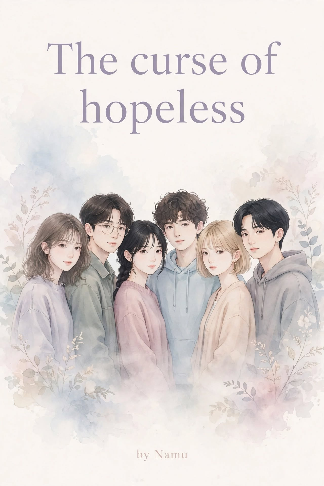

A Novel
"Maybe being hopeless was never the problem."
"Life is messed up rn!" Lia shouted from across the room.
"You better get it right or I'll kill you!" Jean shouted back from another corner.
And that was how most mornings started in the Flynn household.
Lia was eighteen, a tech major pursuing her diploma, and, according to Jean, a complete disaster when it came to getting ready on time.
Jean was two years older, an architecture major, and somehow managed to look put together even when she had ten minutes to get ready.
They went to the same university, which was either the best thing that had ever happened to them or the worst. Neither of them had decided yet.
Sometimes they were best friends.
Sometimes they were enemies.
And sometimes they genuinely looked like they were one argument away from killing each other.
"Where is my black top?" Lia yelled.
"You have seventeen black tops!"
"That's not the point."
"What is the point?"
"The one I want is missing."
Jean sighed.
"Of course it is."
Lia finally found the top buried under a pile of clothes on her bed.
"There!"
Jean looked at her.
"You're unbelievable."
"Thank you."
"That wasn't a compliment."
"I chose to take it as one."
Jean rolled her eyes and grabbed her bag.
Lia followed her downstairs, still fixing her hair as they walked.
They hopped into their car, Jean taking the driver's seat while Lia connected her phone to the speakers.
A few seconds later, Taylor Swift started playing.
Jean immediately looked at her.
"No."
Lia smiled.
"Yes."
"Lia."
"I knew you were trouble when you walked in..."
"I'm turning this off."
"...so shame on me now."
Jean reached for the phone.
Lia moved it away.
"Don't you dare!"
"You know I hate this song."
"Exactly."
"You are so annoying."
"And yet you love me."
Jean stared at her for a second before starting the car.
"Unfortunately."
Lia smiled and turned the volume up.
She had always been like that.
Full of life.
Or at least, she liked to think she was.
Lia was the kind of person who could romanticize almost anything. A rainy afternoon. A stranger smiling at her in the hallway. Someone holding the door open for another person. A song playing at the exact right moment. She read romance books like they were instruction manuals for life. She listened to Taylor Swift like every song had been written specifically about her. She believed in coincidences, signs, timing, and the idea that maybe, somewhere out there, someone was waiting for her. Which was funny, because Lia Flynn had been single for as long as she could remember.
"Single since birth," she liked to say.
She wasn't desperate for a relationship.
At least, that's what she told everyone.
She was actually quite happy.
She was one of the smartest students in her class, although she rarely acted like it. She'd procrastinate, complain about assignments, spend hours reading something completely unrelated to college, and then somehow sit down the night before an exam and get the grades.
Life was pretty fine. Nothing extraordinary. Nothing terrible. She had Jean. She had her friends. She had college. She had books. She had music. She had a life she was slowly figuring out. And for an eighteen-year-old, that was enough.
Until one day, the world stopped.
"It's a lockdown."
The news reporter said it like those two words were enough to explain everything.
Lia stared at the television. Jean stood beside her, arms crossed.
"What does that even mean?"
"I don't know."
"You're the smart one."
"I am not the smart one."
"You literally study tech."
"That doesn't mean I know what's happening with the world."
They both looked back at the television. People were talking about a virus. Cases. Hospitals. Restrictions. Something called COVID-19 that none of them had really heard about before. And suddenly, everyone was scared. Lia grabbed the keys.
"We need groceries."
Jean looked at her.
"Now?"
"Yes, now."
"Why?"
"Because apparently the entire world is ending."
"That's dramatic."
"Have you seen the news?"
"Yes."
"Then let's go."
They rushed out, the streets were crowded. People were everywhere, trying to buy whatever they could before everything closed. There was panic in the air, people were talking loudly. Stores were getting emptied. And for the first time, Lia saw something she'd never really seen before.
Fear.
Real fear.
The kind that made people unsure of what tomorrow would look like.
Lia and Jean lived alone.
Their parents had transferable jobs and were usually moving from one place to another, so the sisters had gotten used to managing things themselves.
But this felt different.
There was no college.
No going out.
No random plans.
No normal days.
The streets were slowly becoming empty.
And everyone was being told to stay inside.
For a few days, they thought.
Maybe a couple of weeks.
It couldn't possibly last longer than that.
Right?
It did.
Days turned into weeks. Weeks turned into months. And eventually, nobody even remembered what a normal day was supposed to feel like.
Jean spent hours texting and calling the guy she was dating.
Lia watched. She smiled for her sister. She teased her. She pretended she wasn't jealous of the fact that Jean had someone to call at the end of the day.
Because Lia had always romanticized love, but somehow, love had never really found its way to her.
At first, lockdown felt almost like a vacation.
Then it became boring.
Then lonely.
And then the loneliness started feeling normal.
Lia studied.
She watched movies.
She read books.
She listened to music.
She scrolled through Instagram for hours.
She'd wake up, look at her phone, complain about having online classes, attend them while barely paying attention, and then somehow end up back on Instagram.
One afternoon, she was scrolling through one of the fandom pages she followed.
Someone had posted something about one of the idols not being talented enough to be in the group.
The comments were a mess. People were arguing. People were insulting each other. People were acting like they personally owned the group. Lia stared at the screen.
"Oh my God."
She kept scrolling.
Someone said the idol couldn't sing.
Someone else said they couldn't dance.
Someone else said they shouldn't even be in the group.
Lia couldn't stop herself.
She typed a reply.
And then she saw a comment from someone named jam2504.
"You don't get to decide who stays or leaves the group. You can't even dance and sing at once."
Lia stared at the comment.
Then smiled.
"Atta boy."
She liked the comment.
Then, without thinking much about it, replied:
"Exactly!"
She put her phone down and went back to her college assignment. For the next hour, she completely forgot about it. Then she picked up her phone again.
One notification.
Instagram.
jam2504 has requested to follow you.
Lia stared at the screen.
For some reason, her heart skipped.
She frowned.
"It's just Instagram."
She stared at the notification again.
Then smiled.
"Okay..."
Maybe lockdown wasn't going to be that boring after all.
500 Miles by Peter, Paul and Mary was playing in Lia's headphones.
She was lying on her bed, staring at the Instagram notification.
jam2504 has requested to follow you.
She clicked on his profile.
And then she did what any completely normal person would do.
She stalked him.
Just a little.
Okay, maybe not a little.
She looked through his pictures, checked his followers, looked at the people he followed, and somehow ended up looking at a post from two years ago.
"Okay," she whispered to herself. "I know enough."
She didn't know what she knew.
But she knew enough.
Lia finally accepted his request and followed him back.
Five seconds later - New message from jam2504.
She opened it.
"Hi! You follow the JBoys too?"
Lia smiled.
She typed back immediately.
"No. I was just checking their fan fight for research purposes."
Three dots appeared. Then disappeared. Then appeared again.
She laughed. And that was it.
The conversation started.
They talked about the JBoys. Then about music. Then movies. Then college. Then random things.
Then somehow, they were talking about things that didn't really matter but somehow felt important when they were talking about them.
It was easy.
Almost too easy.
Lia found herself laughing at her phone.
Actually laughing.
She'd type something, wait for his reply, and then smile at the screen like an idiot when the notification popped up.
And then James started flirting.
Nothing serious.
Just little comments here and there.
Enough to make Lia blush.
Enough to make her put her phone down for a few seconds before picking it up again.
She didn't know what this feeling was. She had read about it. She had written about it in her head a hundred times. But she'd never actually felt it. At least, not like this.
Eventually, James texted:
"I'm James by the way. It was really nice talking to you."
Lia smiled before replying.
"Oh James, I'm Lia. It was great having a conversation with you too."
They kept talking. For hours. It was well past midnight when Lia finally looked at the time. She should have been sleeping. Instead, she was staring at her phone.
There was only one problem.
James was two years younger than her.
Two years.
Which obviously meant there was absolutely no chance that James would ever become her love interest.
Right?
Right.
Obviously.
The next morning, Lia woke up and reached for her phone before she had even properly opened her eyes.
There was a message waiting for her.
James: "Good morning, JBoy gurl."
Lia smiled.
She didn't even realize she was smiling.
Until,
"Why are you happy?"
Lia looked up.
Jean was standing a few feet away, staring at her with the most suspicious expression imaginable.
Lia immediately stopped smiling.
"I'm not."
"You are."
"No."
"You're literally smiling at your phone."
"I'm allowed to smile."
"Why?"
"Because I can."
Jean narrowed her eyes.
"Who is it?"
"No one."
"Lia."
"Jean."
"Who?"
"No one!"
Jean gave her a creepy smile.
"Why are you happy?"
"Oh my God, leave me alone!"
And somehow, within seconds, they were fighting.
Again.
Over the next few days, Lia and James kept talking.
And talking.
And talking.
Eventually, they found out they actually lived surprisingly close to each other. A couple of miles. Close enough to make meeting possible. Far enough that Lia would still need almost an hour to get to his place.
James had a somewhat similar situation. He lived with his grandparents most of the time while his parents lived away. Maybe that was another reason they understood each other so easily.
They both knew what it was like to have people they loved around them, but still feel like they were growing up a little too independently.
They talked about meeting one day. They imagined what it would be like.
Would it be awkward? Would they have anything to say? Would they laugh? Would they even like each other in person?
Lia pretended she wasn't thinking about it.
She was.
One night, they were texting like they usually did when James suddenly sent:
"Yo, I kinda started liking you."
Lia stared at the screen.
Her heart did something weird.
She blushed.
Someone liked her.
Like, actually liked her.
This had never happened before.
Not like this.
She smiled at the screen for a while before reality came crashing back.
Wait.
He's young.
He's two years younger than me.
I can't date such a young guy, right?
She stared at the message again.
Then, because she had absolutely no idea how to respond to something like that, she typed:
"Yeah, I know. I'm lovable."
She put her phone away.
Stared at the ceiling.
Picked up her phone again.
Put it away.
Then finally plugged in her earphones and went to sleep without replying to him.
She didn't know what she was doing.
She just knew that something had changed.
Almost six months passed, six months of talking. Every day. About everything. And absolutely nothing. They video called. They talked for hours before going to sleep. They texted as soon as they woke up. They sent each other random pictures. They shared songs. They complained about college. They talked about their families. They argued. They laughed. They flirted.
They became part of each other's lives without really realizing when it happened.
At some point, James had become part of Lia's routine, and Lia had become part of his.
She didn't have to think about texting him anymore, she just did. It was as natural as waking up.
And then, finally, college was opening again. The lockdown was ending, the world was slowly beginning to look normal.
Lia had never been able to hide anything from Jean, so, naturally, Jean knew everything.
Well, almost everything.
"Are you actually meeting him?" Jean asked.
"Yes."
"You're meeting a guy you've been talking to for six months?"
"Yes."
"Alone?"
"Jean."
"I'm just asking."
"Stop asking."
Jean sighed.
"You're going to get yourself into trouble."
"Maybe."
"You're smiling."
"I know."
"God, you're annoying."
"I know."
And then the day came. Lia and James had decided to meet.
Jean drove her there. Lia sat in the passenger seat, pretending she wasn't nervous. She was extremely nervous.
"Do I look okay?" she asked.
Jean glanced at her.
"You look fine."
"Fine?"
"Yes."
"Fine is bad."
"Lia, you're meeting the guy, not attending the Met Gala."
"I could be attending both."
Jean laughed.
When they finally reached the area, Jean dropped Lia off two blocks away.
"Call me when you're done."
"Okay."
"And don't do anything stupid."
"No promises."
Lia got out of the car.
She checked her phone.
James: I'm home.
She looked around.
Nothing.
She walked down the street.
Then another.
She checked the address.
Nothing.
"Where is this house?" she muttered.
She called him.
"Hello?"
"Where are you?"
"I'm home."
"I know that. Where?"
"Look up."
Lia looked up.
And there he was. Standing on the balcony, waving at her. Smiling.
A huge, stupid, beautiful smile.
For a second, Lia just stood there, she forgot about the two-year age gap, forgot about the distance. Forgot about every reason she'd given herself for why this shouldn't happen.
There was just him.
And her.
Looking at each other for the first time.
After six months of messages.
Six months of calls.
Six months of knowing someone without actually knowing what it felt like to stand in front of them.
James smiled.
Lia smiled back.
And somewhere between that balcony and the pavement below it, Lia realized something she had been trying very hard not to admit.
She liked him. She really, really liked him.
The first meeting was awkward. Not bad awkward.
Just... they've been talking for six months and somehow standing in front of each other feels completely different awkward.
They knew what to talk about. They just didn't know where to look while talking about it.
James was tall. Almost six foot one. Lean but bulky, with black hair, black eyes and a cute gummy smile that Lia had already seen a hundred times through video calls but somehow looked completely different in person.
Lia kept catching herself looking at him. Then looking away. Then looking at him again.
"So..." James said.
"So," Lia replied.
"You're real."
She laughed.
"Unfortunately."
James laughed too.
And somehow, that broke the awkwardness.
They started talking like they always did.
Except now, they could actually see each other's reactions.
They took pictures. A lot of pictures. They tried a few TikTok trends, failed at some of them and pretended the failures were intentional.
At some point, James took Lia to show her his drawings. Lia looked through them one by one. They were actually really good.
"You never showed me these."
"I didn't?"
"No."
James took one particular drawing from the pile.
Lia stopped. It was her. Not exactly her, maybe, the hair, the face, the little smile.
Her.
Lia looked at him.
"You drew me?"
James shrugged, suddenly looking shy.
"Yeah."
"When?"
"Few days ago."
"Why?"
"I don't know."
Lia smiled.
James looked at the drawing and then at her.
"You can take it if you want."
"What?"
"It's a gift."
Lia stared at him. Then smiled.
Maybe this was it.
Maybe this was the reason she had spent years reading romance novels and listening to love songs and imagining little moments that didn't even exist.
Maybe this was the reason she had romanticized every sunset, every rainy day, every stupid coincidence. Maybe all those little things had somehow led her here.
She didn't think. She just hugged him.
Tightly.
James hugged her back. Twice as hard.
And for a moment, neither of them said anything.
They just stood there. Holding each other, it just felt right.
They had lunch together, It was awkward again. They talked about how awkward it was. Then somehow forgot they were supposed to be awkward and started eating like monsters. Lia laughed so hard at one point that she nearly choked. James looked at her and started laughing too.
There was something between them.
A spark.
Something Lia couldn't really explain, and maybe she didn't need to. Until her phone started ringing.
Jean.
Lia looked at the time.
Her eyes widened.
"Wait."
"What?"
"It's been six hours."
James laughed.
"Six?"
"Jean is going to kill me."
She quickly picked up her bag.
Before leaving, she looked at James.
And then, almost without thinking, she leaned in and kissed his cheek.
It was quick.
Shy.
Barely even a kiss.
"Bye."
James smiled.
"Bye."
Lia walked away.
She called Jean while walking.
No answer.
Again.
No answer.
Again.
Still nothing.
Lia sighed.
She turned around one last time.
James was still standing on the balcony.
Just looking at her.
He waved.
Lia blushed so hard that she immediately turned around and started walking faster. Then faster. Then basically ran.
She finally found Jean.
Jean was sitting outside, eating ice cream and very deliberately ignoring Lia's calls.
"Why weren't you picking up?"
Jean took another spoonful.
"Did you?"
"What?"
"Did you call me?"
"Yes!"
"Oh."
"Dude! I didn't know it had been so long. I'm sorry."
Jean shrugged.
"No worries."
Lia smiled.
Jean held up her ice cream.
"Pay for this and we're good to go."
Lia laughed.
"Fine."
On the way back, Jean asked approximately a million questions.
"How was it?"
"Good."
"Just good?"
"Really good."
"Did you kiss?"
Lia looked at her.
Jean's eyes widened.
"You did."
"Maybe."
"LIA!"
"Stop!"
Jean started laughing.
Lia's phone buzzed.
She looked down.
A message from James.
I miss you already. Come back!
Lia smiled.
Jean saw it.
"Oh, this is going to be fun."
"Don't."
"I'm not saying anything."
"You're literally smiling."
"I know."
And the teasing continued all the way home.
College had finally started feeling normal again.
Almost a month had passed since Lia and James had met.
They were both busy with their own schedules, so they didn't get to see each other as much as they wanted. Lia had started taking her bike to college because her schedule and Jean's schedule rarely matched anymore.
Most days, she came home exhausted. That day was no different. She walked out of college, bag hanging off one shoulder, completely drained.
And then she saw him.
A familiar figure. A familiar smile.
James.
Lia's exhaustion disappeared instantly. She didn't even think. She ran towards him. James barely had time to react before Lia hugged him.
"Oh, I've missed you so much."
James smiled.
"I missed you too."
Then he picked her up.
"James!"
He laughed as Lia tried to get him to put her down.
"You're annoying."
"You love me."
Lia smiled. Maybe she did.
They grabbed some food on the way back. Lia took James to her place, she expected Jean to be home.
She wasn't. There was a note on the door.
Hey Li, Will be late today. Have extra classes and an assignment to submit. Have lunch and probably dinner without me. I'll call you when I'm free :)
Lia smiled.
"She's not coming."
James looked at her.
"So we're alone?"
Lia raised an eyebrow.
"Don't make it weird."
"I didn't say anything."
"You were thinking it."
They went inside. They sat in the hall, eating while watching Pride and Prejudice. Lia was completely invested. James, on the other hand, was more interested in watching Lia watch the movie.
She knew every dialogue. Every expression. Every little moment. When Mr. Darcy appeared, Lia practically melted.
James laughed.
"You really love this movie."
"I love him."
"Who?"
"Mr. Darcy."
James looked offended.
"I thought you liked me."
"I do."
"Good."
Their hands found each other.
James kissed her cheek.
Then her forehead.
Lia smiled.
Everything felt soft. Easy.
Until the ending came, Lia knew the dialogue by heart. She looked at James and repeated it, almost dramatically:
"You have bewitched me, body and soul, and I love... I love... I love you."
James grinned.
"Me too."
There was a pause. Lia looked at him. James looked at her. Neither of them said anything.
He moved a little closer, and then he kissed her.
Just a small peck.
Lia froze for a second, she hadn't expected it. Then she leaned in again, the second kiss lasted longer. It wasn't intimate. It wasn't anything dramatic.
It was just two people who had spent months talking through screens finally getting to kiss each other, there was something passionate about it, something warm. Something that made Lia forget every thought in her head. When they pulled away, they both looked away almost immediately.
Shy. Embarrassed. Happy.
"So..." Lia said.
"So."
"Food?"
"Food."
They both laughed.
And just like that, the awkwardness was back.
A notification popped up on James' phone. He picked it up.
Lia glanced at the screen without thinking. A name caught her attention.
Lily.
Hey, you better be prepared tomorrow.
Lia's smile faded slightly.
"Who's Lily?"
James looked at the message.
"Oh, she's from college."
"For what?"
"The presentation tomorrow."
"Oh."
Lia nodded. She smiled again. Or at least tried to.
They went for a walk later.
Lia dropped James off at the metro station. They said goodbye.
Then they both started texting again before they had even reached home. When Lia walked through the door, Jean was already there.
"Where have you been?"
"Well..." Lia smiled.
"He visited."
Jean's face immediately changed.
"Oh."
Lia laughed.
"Tell me about it."
So she did.
Everything.
The meeting.
The movie.
The kiss.
Everything.
Except Lily.
That wasn't important.
Right?
James reached home.
Lia was already in bed when her phone buzzed.
A message from him.
I know you're overthinking the text. But trust me, it's for the presentation.
Lia stared at the screen. Another message appeared.
I only love you.
Her heart skipped. Then another.
I wanted to ask you in person but couldn't.
Lia sat up, and then she saw the final message.
Lia Flynn, can you please be my girlfriend?
She stared at it.
Once.
Twice.
Then again.
The biggest fool smile appeared on her face.
She typed:
All yours, sire!
She threw her phone onto the bed and immediately ran to Jean.
"Jean!"
"What?"
Lia started singing at the top of her lungs.
"One kiss is all it takes, falling in love with me..."
Jean stared at her.
Then at her phone.
Then back at her.
"Oh my God."
Lia started laughing.
Jean smiled.
"You're officially someone's girlfriend."
Lia covered her face.
"Stop!"
Jean laughed.
And for once, Lia didn't care.
She had wanted this.
For years.
And now, somehow, it was hers.
Maybe this was it. Maybe this was the love story she'd always been waiting for. Maybe James was the reason she had always been such a hopeless romantic. And for the first time in her life, Lia didn't feel hopeless at all.
Two years. That was how long it had been. Two years since Lia had stood outside James's house and looked up at him on that balcony. Two years since she'd thought, Maybe this is it. And somehow, it actually had been. At least for a while.
They had birthdays together.
They had celebrated stupid little milestones that probably meant nothing to anyone else.
They had fought over the smallest things.
They had cried.
They had laughed.
They had spent hours talking about absolutely nothing.
They had seen each other at their worst.
And at their best.
James had become part of Lia's everyday life.
Her morning texts.
Her late-night calls.
Her person to complain to.
Her person to celebrate with.
Her person to annoy.
Her everything.
And Lia was his too.
James was eighteen now.
He was in college and had somehow turned into the kind of guy everyone noticed.
He was tall.
Funny.
Popular enough that people knew him even if they didn't really know him.
And apparently, a lot of girls had crushes on him.
Lia knew.
She'd noticed.
Of course she'd noticed.
She got jealous sometimes.
She admitted it too.
James would usually just shrug.
"Lia, they're just girls from my class."
"I know."
"So?"
"So nothing."
"Then why are you making that face?"
"What face?"
"That face."
"I don't have a face."
"You literally do."
She'd laugh.
He'd kiss her forehead.
And that would usually be the end of it.
Lia had an internship now too.
She was earning some money of her own, and somehow most of it ended up being spent on James.
Food. Gifts. Little things he'd casually mention wanting. She liked spoiling him. It made her happy. Maybe because she'd always believed that loving someone meant giving them everything you could. Even if sometimes you gave too much.
Then came the camping trip. James was going with some people from college. Lia didn't think much of it. Until she saw a video.
James was dancing.
With a girl.
Close.
Too close.
Lia watched the video once.
Then again.
Then again.
She felt something twist in her stomach.
She called him.
He didn't answer.
So she texted.
Why didn't you tell me about this?
No response.
She waited.
Then called again.
Finally,
James: What?
Lia: The camping trip.
James: Yeah?
Lia: You didn't tell me you were going.
James: I forgot.
Lia: And you didn't think I'd want to know?
James: Lia, come on.
That was how the fight started.
And once it started, neither of them knew how to stop.
"You're getting way too close to people, James."
"She's my friend."
"You're literally dancing with her."
"So?"
"So you could have told me."
"Why?"
"Because I'm your girlfriend!"
James sighed.
"Lia, stop this."
"You always say that."
"Because you do this every time I get close to someone."
"Because I don't like it."
"I can't keep explaining every friendship to you."
"I'm not asking you to explain every friendship. I'm asking you to respect me."
"I do respect you."
"Then why does it feel like you don't?"
James was quiet for a moment.
Then he said it.
"Let me live my life too."
Lia froze.
"What?"
"I'm in college."
"So am I."
"Then act like it."
Lia's eyes filled with tears.
"I ain't dancing around with random dudes."
"She's not random, Lia. She's a friend."
"Oh, so now you're defending her?"
"Lia... stop."
"No."
"I need space too."
Something about those words made Lia's stomach drop.
"What does that mean, James?"
He didn't answer immediately.
Then,
"Let's just take a break."
Lia stared at the screen.
Her hands went cold.
"James..."
"Let's see the world without each other too."
Lia felt like she couldn't breathe.
"No."
"Lia"
"I'm sorry."
"It's not about"
"I'm sorry. I won't do it again. I won't stop you. Please don't do this."
Her tears were falling now.
James replied:
Get over it, Lia. It's my decision. I don't want this right now.
And then his phone went off. Lia knew because her messages stopped delivering. He had turned it off. She didn't sleep that night. She lay in bed staring at the ceiling. Her chest felt heavy.
She replayed every conversation.
Every fight.
Every time she'd gotten jealous.
Every time she'd asked where he was.
Every time she'd told him she didn't like someone.
Maybe she'd ruined it.
Maybe she'd been too much.
Maybe if she apologized enough, she could fix it.
She had to fix it.
The next day was an off day.
Lia called.
Nothing.
She texted.
Nothing.
She apologized.
Again.
And again.
And again.
She probably said sorry a hundred times.
Eventually, she grabbed her bike and rushed to the metro. She was going to James's place. She didn't care if he was angry. She just wanted to talk. When she reached his house, she called again.
Nothing.
Before she could call again, James's grandmother saw her.
"Lia!"
Lia smiled weakly.
"Hi."
"Come in, dear."
She had met Lia many times before. Lia walked inside. She climbed the stairs towards James's room. Music was blasting. She knocked. Nothing. She opened the door. And froze.
James's college friends were there.
All of them.
And the girl from the video was sitting close to him.
James looked up.
The second he saw Lia, he jumped off the bed.
"What are you doing here?"
Lia couldn't speak for a second.
Then she looked around.
"I..."
Her voice broke.
"Sorry."
She swallowed.
"I shouldn't be here."
Someone laughed awkwardly.
One of the guys looked at James.
"Oh boy."
Another one said:
"You're busted."
Lia didn't wait.
She ran.
She ran all the way down the road. She didn't even know where she was going. She just knew she needed to get away. Tears kept falling. She wiped them away. More came. She eventually made it home.
Jean was there. She looked at Lia. One look was enough.
"What's wrong?"
Lia shook her head.
"Not now."
Jean didn't ask again. She just walked over. Held Lia's hand, kissed the back of it, and whispered,
"I'm here."
Lia looked at her, then broke down.
She slept for hours, when she woke up, there was one message.
From James.
You okay?
Lia stared at it.
Then replied.
Why would you ask?
Just out of concern. You're my friend.
Friend.
The word hurt more than she expected.
Are we just friends now, James?
The reply came quickly.
Yes, Lia. That's what I want. It's my choice.
She stared at the screen.
Then typed:
What about my choices, James?
A pause.
I'm not asking you to stop loving me. I just don't want a relationship anymore. If you want to be friends, we can.
Lia didn't reply, she couldn't. She put her phone away.
That night, while scrolling through reels, another message appeared.
Hey. I miss you, Lia.
Another.
It's always fun talking to you.
And just like that, Lia was confused again.
Because how were you supposed to stop loving someone who kept reminding you why you loved them?
Two years passed like that, two years of Lia trying. Trying to get him back. Trying to understand. Trying to become whatever version of herself she thought James might want.
James moved on.
He posted pictures with friends, at parties, with girls. He was living. And Lia watched.
Sometimes she hated herself for watching. Sometimes she told herself she didn't care.
She did.
They still talked. Every day, sometimes, but somehow, they always came back to each other.
They were still part of each other's routines, just not in the way Lia wanted.
One night, James texted her.
Also, I'm leaving in two months. Germany. For studies.
Lia stared at the message, her heart sank. But she smiled anyway.
Oh. Congratulations! I'm so happy for you.
Hehe, thanks. Thanks for always supporting me through it.
Lia stared at the screen for a long time.
Then typed:
James.
Yes, Lia?
She took a breath.
Can we get back together, please?
The typing bubble appeared.
Disappeared.
Appeared again.
Lia, come on. I can't.
She swallowed.
Fine:).
A few seconds later:
Come to my place tomorrow? My friends are throwing me a party.
Lia smiled despite herself.
Sure. After 4 works?
Lia reached James's place at 4:15. Nobody was there, she looked around.
"Where is everyone?"
James smiled.
"They'll be here any minute."
So they waited. They talked about Germany, about college, about life. For a moment, it felt like the old days.
James took her hand.
Lia looked at him.
He squeezed it.
And then somehow, without either of them saying anything, they kissed.
Again.
It was familiar.
Too familiar.
Lia closed her eyes.
For a moment, she forgot everything.
The breakup.
The two years.
The girls.
The distance.
She thought maybe, maybe this meant something. Maybe they were going back to the way they were. Maybe.
The doorbell rang.
James pulled away.
"Oh, they're here."
And just like that, the moment was gone.
There were around fifteen people.
Cake, Music, People shouting, someone smeared cake all over James's face.
Lia laughed.
Then she saw her.
The girl from the video.
She walked over.
"Hi."
"Hi."
"You must be Lia?"
Lia smiled politely.
"How do you know my name?"
"James told me about you."
"Oh."
Lia hesitated.
"What did he say?"
The girl smiled.
"That you're his ex."
Lia's smile disappeared.
"Oh."
"Yeah."
She laughed.
"James and I are kinda close."
Lia looked at her.
"Close?"
"Yeah. We kind of have to be, right? We're moving to Germany together."
She laughed.
Lia felt like someone had dropped a train directly on her chest.
Germany.
Together.
Moving together.
What was the kiss then?
Why hadn't he told her?
Were they dating?
What exactly was happening?
Lia wanted to leave.
She really wanted to leave.
But everyone was happy.
James was happy.
And somehow, she was still standing there pretending everything was fine, because that was what she had become good at.
Caring. Even when it hurt.
The party ended around nine. James insisted on driving Lia home. Neither of them spoke much at first.
Finally, Lia asked:
"So... you and Michelle are moving there together?"
James laughed.
"Yeah."
"Why are you laughing?"
"Because you're making it sound like we're going to live together."
"Oh."
Lia looked out the window.
"You're not?"
"No. We're just shifting there together. Like... travelling together."
"Oh."
Silence.
"Are you two close?"
"I mean, yeah. You could say that."
James smiled.
"Not close like us, though."
Lia looked at him.
"James, I don't like how you're laughing this off."
"What do you want then, Lia?"
She swallowed.
"Are you two dating?"
James sighed.
"No."
"Then what are you?"
He hesitated.
"It's a casual relationship."
Lia frowned.
"What does that mean?"
"Lia..."
"What does it mean?"
"It means we mess around sometimes."
She went quiet.
"And you're moving together?"
"Lia, stop."
"James."
"We're over."
"I know."
"I told you two years ago."
"Then why did you kiss me?"
He didn't answer.
"Why did you kiss me, James?"
"It was a moment."
Lia's eyes filled with tears.
"Then what was I supposed to think?"
"I'm sorry."
He looked at her.
"I won't do it again."
A pause.
"Like I would want to."
Lia looked down.
She couldn't stop crying.
James glanced at her and immediately felt terrible. He had known exactly what that kiss would mean to her. And he'd done it anyway.
Two months passed quickly, it was time for James to leave. Lia went to the airport with everyone else.
She smiled. She hugged him. She wished him luck. She watched him laugh with his friends. And watched Michelle stand beside him.
They looked close.
Too close.
But Lia endured it.
Because that was what she had been doing for two years.
Enduring.
A few days later, she saw their Instagram story.
They were sleeping.
Cuddling.
In the same bed.
Lia stared at the screen.
She didn't need an explanation anymore.
She knew.
It was done.
Whatever she had been holding onto was finally gone.
She cried.
Hard.
She hated herself for letting someone get so close.
For letting someone become so important.
For giving someone the power to destroy her.
She went to Jean.
And told her everything.
Jean listened.
Then asked quietly,
"Do you want me to text him?"
Lia shook her head.
"No."
Jean nodded. She didn't say anything else. Because she understood. She was hurting too. Her own relationship had fallen apart around the same time. And suddenly, the Flynn house became a place where two sisters sat on the floor crying over two completely different people. They held each other. Cried together. Laughed through tears at how horrible their lives had become. Neither of them knew what came next. But they knew one thing. They couldn't stay there forever. It was almost time for their undergraduate college A fresh start. A different college. Different people. Different lives. Maybe that was exactly what they needed.
"Are you ready or not yet?" Jean screamed from downstairs.
"I can't find my black top!"
"Which black top?"
"That one!"
"Lia Flynn, if you don't come down in five minutes, I'm leaving!"
"Wait!"
"We don't even have the same college anymore, remember?"
Lia stopped. She looked around her room at the clothes scattered everywhere, at the books, at the old pictures, at everything that had happened.
Two years of love. Two years of heartbreak. And somehow, she was still here.
Still Lia.
Still romanticizing things.
Still believing, somewhere deep down, that love had to mean something.
She grabbed the black top.
Ran downstairs.
And for the first time in a long time, she didn't look back.
Lia was focused on herself now.
Her heart had built layers around itself. Getting in wasn't impossible, but it definitely wasn't easy anymore.
New place. New day. A new university. It was her first day of bachelor's, and Lia was scared. Nervous, actually.
Jean dropped her off at college. Jean had two extra years of her diploma, so technically, they were starting their bachelor's journey around the same time.
But they weren't in the same university anymore.
Jean hugged Lia tightly before she got out of the car.
"You call me if anything at all happens. I'll run to come and pick you up."
"Don't be so emotional," Lia said mockingly. "But yes, you'll be the first person I call if I ever need an escape from here. Same goes for you."
Jean smiled. "I won't run though. I'll catch a metro for you." They both laughed.
"Good luck, Li."
"Thanks, J."
And Lia walked away.
The university was crowded. People were everywhere. New faces. New voices. Everyone seemed to know someone already. Lia was an extrovert. She loved talking. But only after she found people who matched her vibe.
This?
This was awkward.
Everyone was trying to blend in, trying to make friends, trying to figure out where they belonged. Lia finally reached her class. And somehow, it was even more chaotic. People were talking everywhere. Some were already exchanging Instagram accounts. Some were laughing like they had known each other for years.
Lia simply took a seat in the corner.
She looked around.
This is my life now for the next three years.
Great. Just great.
A few minutes later, someone entered the classroom.
He looked like a professor. But he was way too cool to be a professor.
Brown hair, spectacles, a cute smile, a bag around his waist.
He walked in casually and placed his things on the desk.
"Hello, class. I'm your new AI professor, Robert, and I'm your home teacher as well. If there's anything, you can reach out to me. But before that, I want all of you to settle down and introduce yourselves to me."
"Sir, are you single?" a girl shouted from across the room. The entire class burst out laughing. Robert laughed too.
"Yes, I am single."
The girl smiled.
"But I'm not available. Sorry."
He gave a tiny pout. For some reason, it looked cute. The class started laughing again. One by one, everyone introduced themselves.
Honestly?
It was boring.
Until one person caught Lia's attention.
He looked kind of different. But somehow, there was still a lot of energy in him.
He was tall. Cute nose. Brownish eyes. Lean. Definitely crush material.
Lia watched him when he stood up.
"Hey. I'm Daniel, and I'm not looking to make friends with anyone. So please, I'm here to study and get good grades." He made a peace sign, then sat down.
"Rude!" "Boring!" "Too good to be true!", people mocked him.
Daniel didn't react. He just sat there with a straight face.
Lia smiled to herself.
He's going to be my best friend.
She was so occupied in her thoughts that she didn't realise it was her turn, someone sitting beside her tapped her shoulder.
"Lia, your turn."
"Oh."
She instantly stood up.
"Hi, guys. I'm Lia. I'm not really an introvert, but this new place is so new and I'm unable to communicate with anyone yet. I hope we really get along, she sat down and immediately regretted her introduction.
That was so dumb. Before she could overthink it, Robert interrupted.
"Ahh, Lia Flynn?"
Lia looked up.
"The top student!"
The class looked at her.
"Everybody, our highest ranker. I'm so proud of you, Lia, and I look forward to working with you!"
Lia smiled awkwardly. But internally? She was crushing. Why is he so cute?
The day went by pretty quickly, mostly introductions. A few lectures. A lot of awkward conversations, but finally, it was time to leave.
Lia was packing her bag when someone tapped her shoulder. She turned around.
Daniel.
"Umm... hi?"
"Hi. I'm Daniel."
"I know."
"Your competition."
Lia raised an eyebrow.
"Better watch me get better scores than you."
He said it completely seriously.
"Umm, okay, Daniel. Please go ahead. I'll root for you. Let me know if I can help you with anything, okay?"
Daniel stared at her.
"Don't be good to me."
"Umm... okay. I was just offering."
"Whatever. Toppers are not nice, really."
And he walked away. Lia stood there for a few seconds.
What just happened?
She shrugged. Whatever. She called Jean.
"Hey, Li-bee!"
"Ew. What the fuck is wrong with you?"
"Say wassup!"
"I'm done with college. Can you come pick me up?"
"Ahh, Lia, I'll get a bit late. Go grab a metro for today."
"Fine. See you."
"Bye!"
Lia was just leaving the university when a car honked behind her. She moved aside, the window rolled down.
Daniel.
"Hey!"
"Hey, Daniel."
"I'm sorry about earlier. I shouldn't have said all of that. I just didn't have a great experience in my past college."
"Ahh, don't beat yourself up. It's quite okay."
"Glad. Where are you heading? Should I drop you somewhere?"
"No, I'm just going by metro. Thanks, though."
"I mean, I can drop you till the station."
Lia face-palmed.
"Daniel, this makes you look creepy."
Daniel burst out laughing.
"Oh, I'm so sorry! I don't mean to. I just... don't know how to talk to girls."
Lia laughed.
"Well, would you like to drop me till the metro station?" Daniel said with a shy smile
"Now it looks like you're asking me to prom."
He laughed again.
"Well, you may!", Lia got into the passenger seat and locked her seatbelt.
"So..." Daniel started.
"So?"
"Topped, huh? Not bad. I myself wanna study so hard, but I'm unable to because of some reasons."
"Well, I don't know the reasons, but I'm sure if you do it with passion, you'll achieve it."
"It's easy for someone to say when you're already there."
Lia looked at him.
"Daniel, I was dumb too. I just started studying like my life depended on it and somehow ended up here."
Daniel laughed.
"Okay, okay. Makes sense."
He drove for a few more minutes.
Then he suddenly said,
"Ahh! Just so we're clear, I'm not looking at this as a romantic relationship at all, yeah?"
Lia looked at him.
"Well, Daniel, same. I went through a big-ass heartbreak, and now I'm done for some time. I'm on a break with love."
Daniel held out his hand.
"So, Lia Flynn... friends?"
Lia looked at his hand, then shook it.
"Yes, Daniel...?"
"Jacobs."
"Right. Daniel Jacobs."
They exchanged numbers just before reaching the metro station.
"Alright then. See you tomorrow, Daniel."
"You too, Lia. Bye. Text me once you're home."
Lia laughed.
"You really don't know Girls 101, huh?"
Daniel smiled shyly.
"I'm learning."
"Well, don't worry. You got Lia Flynn as a friend."
And just like that, they went their separate ways.
Lia reached home and immediately texted him.
I'm home!
She took a bath and got freshened up.
It was almost six.
She opened the fridge.
Nothing. Absolutely nothing. Except one packet of instant noodles.
"Of course", She picked it up and started making them.
Her phone buzzed. Two notifications.
Jean.
Daniel.
She opened Jean's chat first.
Don't eat only noodles! I'm on my way. I'll grab something on the way.
Lia smiled "OMG. Such a sweet sister", she said mockingly to herself.
Then she opened Daniel's message.
Glad ;). Very random, but did you also feel like the class was a mess?
Lia immediately stood up.
Oh God, don't even ask. I've never been so scared of people. And all of them were just so arghhhh.
Daniel replied.
THANK YOU. I thought I was the only one.
They ended up having a completely random conversation about their first day.
By the time Jean reached home, Lia was laughing at her phone.
Jean walked in with food.
"You're smiling."
"I made a friend."
Jean raised an eyebrow.
"A friend?"
"His name is Daniel."
"Male friend?"
"Yes."
Jean smiled.
"Oh, this should be fun."
"Don't start."
Lia told her everything.
Daniel. The competition. The awkward car ride. The friendship agreement. Jean laughed through most of it.
She also told Lia about her own first day and the two girls she'd met.
Apparently, Jean's college was already insanely competitive.
They talked for hours.
And for the first time in a while, Lia went to sleep feeling like maybe this new life wouldn't be so bad.
A few months passed.
Daniel and Lia were best friends now.
Actually...
They were inseparable.
They studied together.
Made fun of each other.
Shared food.
Complained about professors.
Talked about everything that happened during their day.
Daniel was a football player, and somehow, he'd become pretty popular around university.
Lia didn't really care about that.
To her, he was just Dan.
And Lia knew this was what she needed. A friend. She had lost a lot of people after everything that had happened with James.
Daniel was different, there were no expectations. No butterflies. No guessing games. Just friendship. And somehow, that felt safe.
One afternoon, Lia was studying near the football field when someone suddenly appeared in front of her.
"Hey, Li. Studying without me now?"
She looked up.
"Dumbass Dan. I'm completing your own assignment."
"Oh yes, please do. I have to submit it tomorrow."
"Dumbass."
Daniel smiled.
"Oh, Li, my parents are out of town this weekend and I'm hosting a party. Why don't you and Jean join?"
Jean and Daniel had become friends too, he'd been to Lia's house a few times, and at this point, he was basically part of their little circle.
"Dan, I'll think about it. I have a Java submission by Monday."
"Come on, Li. I need you there. There will be a lot of people."
Lia sighed.
"Fine. But I can't guarantee Jean. I don't know if she'll be available."
"Don't worry about her. I'll ask her when I drop you today."
"Fine. Try your luck."
Jean had been extremely busy since joining her new college.
She had a lot on her plate. Sometimes she even stayed up all night at university. It was kind of boring without her at home.
Later that evening, Daniel dropped Lia home.
As they reached the house, Lia noticed Jean's car.
"Oh, she's home."
Daniel smiled.
"Guess who's lucky."
They walked inside.
Jean was in the kitchen making garlic bread.
Daniel immediately grabbed a piece.
"AH!"
He started screaming.
"Of course it's hot! I just got it out of the oven, you monster!" Lia and Jean burst out laughing.
Daniel grabbed some water.
"Oh, J. Since you burned my mouth, you owe me something."
"I didn't burn your mouth. You did. But go on. What do you want?"
"I'm organising a party this weekend. Can you come? You can invite your friends. That isn't the problem."
Jean looked at him. Daniel continued, "I just think you two are my closest people. Basically family. And I really want you both there. It's my first party."
Jean smiled.
"I was going to say no."
Daniel's face dropped.
"But if you put it that way... fine. I'll come."
"Yes!"
"But I'm bringing two of my other friends."
Daniel immediately shook his head.
"Bring a hundred. I only want you two."
Lia and Jean both pouted.
Daniel grinned.
"To clean my house."
"What?!"
They both hit him.
"I'm kidding!"
They sat down for dinner. They talked. They laughed. They argued about absolutely stupid things. And for the first time in a long time, Lia felt like she was exactly where she was supposed to be.
This place was different.
It wasn't the love story she had imagined.
It wasn't butterflies.
It wasn't late-night calls with someone she couldn't live without.
It was friendship.
It was laughter.
It was having people who stayed.
And maybe... That was exactly what Lia needed.
The days went by pretty fast, and somehow, it was already the weekend.
Jean and Lia were standing in front of the mirror, fighting over who was wearing the hotter outfit.
Lia wore a black bodycon dress with buttons down the front.
Jean wore a black knee-slit dress.
Lia looked at her sister.
"That's too hot."
Jean looked at Lia and smirked.
"Well, at least one of us has to look hot."
"Excuse me?"
"I'm just saying."
Lia rolled her eyes.
"Whatever. Let's go."
They finally left.
The moment they reached Daniel's place, they could already hear the music from outside. Loud music. Very loud music.
Lia had been to Daniel's house plenty of times. But never like this. There were cars everywhere. People everywhere. They rang the doorbell.
Brian.
Daniel's football friend.
And their classmate.
"Hey, Lia! You made it!"
Before Lia could even react, Brian hugged her.
Lia froze.
They had never hugged, they had barely even shaken hands.
What the hell was that?
"Hi, Brian. Nice to see you too," Lia said awkwardly.
Brian's eyes moved towards Jean.
"Well, who in the world is this angel?"
Jean looked at him.
"Hi. Jean. Lia's sister."
Brian smiled.
"Lia, you have one beautiful sis." His eyes were still stuck on Jean.
The moment lasted about three seconds too long.
"Alright, Romeo, move." Lia pushed him aside. "Where's Dan?"
She grabbed Jean's hand and pulled her inside.
Jean looked at her.
"Who was that?"
"Umm... Brian. The playboy in uni."
Jean looked back at him.
"Don't."
"I'm not saying anything."
"He just flirts and plays around with girls. It's normal."
Brian was the captain of the football team. Strong. Confident. Popular. Basically, every girl's crush. He knew exactly how popular he was too.
Lia and Brian had become friends because they were around each other a lot whenever Daniel had games.
They were friends. But not exactly close.
"Well, he looked nice," Jean said.
"Well, duh. Everyone thinks that." Lia pointed at all the girls who had their eyes stuck on the macho! "But you better keep your ass away from him."
"Yeah, yeah. Of course. I'm not even interested."
Before Lia could reply, Daniel appeared with three drinks in his hands.
"Heyyy! My favourite people made it! Lessgoo!"
Lia immediately hugged him.
"Yeah?"
Jean hugged him next.
Daniel smiled.
"Alright, everything is here. Food, drinks, music. Feel free to do whatever you want."
Then he looked at Jean.
"I, where are your friends?"
"They're on their way. Only one of them is coming."
"Ahh, okay."
A few minutes later, Jean's friend Mia entered. And Daniel stopped. Completely. Mia was tall, confident and looked absolutely stunning.
Daniel stared.
Jean noticed.
Before he could do anything stupid, she warned him.
"Dan. She's taken, okay?"
Daniel looked disappointed.
"And the other friend was supposed to be her boyfriend, but his car broke down. He'll be here any minute."
Daniel sighed.
"Ahh... who cares." He shrugged.
"Alright, I'll steal Lia for a moment. I need to show her something."
He pointed towards Mia.
"You be with your hot chica, Mia." Jean rolled her eyes.
Daniel grabbed Lia's hand and pulled her upstairs.
"What do you wanna show me?"
"I got something."
"What?"
Daniel opened his bedroom door. Lia's eyes widened. There was a telescope near the window.
"OMG, Dan!"
She walked closer.
"Is that... a telescope?"
"Hell yeah!", Daniel grinned. "We can watch the moon up close now."
Lia screamed.
"DAN!"
They hugged.
For a few seconds, they just stood there laughing like idiots.
"Alright, we gotta go downstairs before they destroy my house."
They broke the hug.
"Oh yeah!"
Lia suddenly remembered.
"Brian was hitting on Jean."
Daniel's face immediately became serious.
"Oh, dude. Better stay away from my homie J."
"Exactly."
They both laughed and went downstairs.
A bunch of people who knew Lia and Daniel pulled them into the crowd. Music. Dancing.
Someone handed Lia a drink.
She started dancing with Daniel.
For once, she wasn't thinking about anything. Just music. Just her friends. Just life.
Jean was standing with Mia. Mia was constantly on a call with her boyfriend.
"Hey, give me a moment! I can't hear you!"
She pointed at Jean.
"Give me a minute, J. I'm sorry." Then she rushed outside.
Jean looked around.
The party was loud. Too loud.
She found a quiet corner of the couch and sat down, scrolling through Instagram. A few moments later, someone walked over.
A glass appeared in front of her.
"Need a drink?", Jean looked up.
Brian.
"Sure." He handed it to her.
"Can I sit here?"
"Um... sure."
Brian sat down besides Jean.
"So, how's the party?"
"Oh, it's good."
Jean looked around.
"Just too loud."
"Yeah. It tends to get loud."
Brian smiled.
"I understand how hard it is to find a place where everything is silent."
Jean looked at him.
Brian continued. "But guess what? There is no silent place."
Jean raised an eyebrow.
"Your brain will constantly have a voice."
Jean laughed.
"Woah." She took a sip, "That was a pretty deep conversation for a playboy at the loudest party in college."
Brian laughed.
"Yeah, well..."
He looked down at his drink.
"Not what I need all the time, though."
Jean looked at him.
There was something different about him for a second.
Something she hadn't expected.
Brian looked at her.
"The only good thing is you."
Jean smiled.
"You?"
"You're goddamn hot."
Jean laughed.
"You switched vibes very fast."
"No lies, Jean."
He smiled, "You're hot."
Jean felt something strange in her chest. She noticed Brian's hand near hers. She looked at him. He was already looking at her.
There was something about the moment, something unexpected, something neither of them had planned.
Jean smiled.
"Well, you know, you have a pretty good reputation as a playboy."
She looked directly into his eyes, "For my sister." Then she smiled, "And basically the whole college."
Brian laughed.
"Let me play you a little, then." The teasing disappeared.
He leaned closer.
And kissed her.
Jean froze for a second.
Then she kissed him back.
The moment was interrupted almost immediately.
"JEAN?! WTF?"
They broke apart.
Lia and Daniel were standing there.
Both looked completely shocked.
Daniel stared at Brian.
"Brian, dude... no way."
He stepped forward angrily.
"She's my homie, mate. Not her." Jean immediately stopped him.
"Dan."
Daniel looked at her.
"It was me."
She took a breath.
"Not him. Don't hit him."
Daniel reluctantly stepped back.
Brian looked awkward.
Lia just stared at her sister.
Jean looked back.
Nobody knew what to say.
And somehow, that was how the party ended.
Everyone slowly left. Lia and Jean stayed behind to help clean the house. The three of them worked in awkward silence.
Finally, Jean sighed.
"You guys."
Lia and Daniel looked at her.
"I'm not a kid."
She crossed her arms.
"I know what I'm doing."
Daniel looked away.
Jean continued.
"Stop protecting me so much. I liked him."
Lia raised an eyebrow.
"Really?"
"Yes."
She sighed.
"I know you're concerned for me. I won't do it again with him, alright?"
Daniel nodded.
Lia nodded too.
There was a pause.
Then Lia smiled.
"So... Jean Flynn." Jean immediately knew what was coming.
"Don't."
"Romeo really got you."
"Lia!"
Daniel burst out laughing.
Soon, all three of them were laughing.
And just like that, the awkwardness disappeared.
Again.
It was almost past midnight when Jean yawned.
"I'm sleepy. I should probably leave."
Lia looked around.
"Oh, there's so much to clean. You can't give up yet."
Jean pointed at Daniel.
"You and Dan handle it."
Then she looked at Daniel.
"Dan, please drop Lia once you both are done. I had a long day."
Daniel nodded.
"Of course."
Jean waved.
"Goodnight, idiots."
"Goodnight, J," Lia said.
Jean left.
It was past two when they finally finished cleaning.
The house was quiet now. The music was gone. The crowd was gone. Only the cool night breeze remained.
Lia went upstairs and sat on the rooftop outside Daniel's room. She looked at the sky.
For the first time that night, everything was completely silent.
Daniel went to freshen up.
A few minutes later, he came outside and sat beside her.
Neither of them spoke for a while.
It wasn't awkward. It was comfortable.
Slow.
Quiet.
Pretty.
Lia looked at him.
"Can I tell you something?"
Daniel nodded.
"Anything."
So she told him.
About James.
About the first meeting.
About falling in love.
About thinking he was it.
About Michelle.
About Germany.
About the way everything had ended.
Daniel listened.
He didn't interrupt.
Didn't judge.
Didn't tell her to get over it.
He just listened.
When she finished, Daniel took a breath.
"My parents got divorced when I was younger."
Lia looked at him.
"I didn't know that."
"Not many people do."
He looked up at the sky.
"After that, I kind of had to learn life on my own."
Lia stayed quiet.
Daniel smiled slightly.
"That's probably why I'm so weird."
Lia laughed.
"You are definitely weird."
"Thank you."
"You're welcome."
They both laughed.
Then the silence returned.
But this time, it felt different.
They weren't trying to fill it.
They were just sitting there.
Two people who had somehow found each other at the right time.
Lia looked at the telescope through the window.
"Thanks for today."
Daniel smiled.
"Anytime, Li."
That night, Lia stayed at Daniel's place.
She slept on his bed.
Daniel slept on the couch in the hall.
And neither of them thought anything of it.
Because they were just friends.
Lia and Daniel were now in their senior year. Three years had gone by faster than either of them expected. They were still ridiculously competitive when it came to studies. Although Lia never let Daniel beat her.
Not once.
She was always at the top of the class, professors loved her, Robert especially.
He still reminded everyone that Lia Flynn had been the top student since the day she entered university. Daniel hated that. At least, that's what he claimed.
"Just wait, Flynn. One day."
"Sure, Jacobs."
It had become their little competition, and neither of them wanted it to end.
With senior year came a new batch of juniors. New faces. New looks. New people.
The university was suddenly crowded with students who looked completely lost.
Lia and Daniel had volunteered for the junior welcome day as part of their extracurricular activities. The university had wisely decided not to put them together. Apparently, keeping them in the same department would only cause chaos.
Daniel was assigned to the AI department, where he was accompanying Robert. Lia was volunteering in the labs.
Daniel stood at the entrance with his usual bright smile.
"Hey, guys! Welcome to the department. I look forward to knowing each one of you!"
A few juniors smiled. Some looked nervous. Some were already taking pictures. Then a girl stepped forward.
"You're Daniel, right?"
Daniel looked at her.
"Yeah?"
"I've seen you play football."
She smiled shyly.
"You played really well. You became my favourite player."
Daniel froze. Completely. The girl was cute. Brown eyes. Fair skin. Bangs. And the shyest smile he'd ever seen. He realised he had been staring. He quickly looked away.
"Oh...", He cleared his throat, "That's an honour. Haha. Thanks."
He smiled awkwardly.
"I'll see you at the games."
And then he practically ran away.
Five minutes later, Daniel appeared in the labs.
"LIA!"
Lia turned around.
"What?"
"Come with me."
"What?"
"I need to talk to you."
"I was talking to a really cute guy!"
Daniel grabbed her hand.
"Come!"
"WHAT?!"
He dragged her towards the canteen.
Lia looked offended.
"I was talking to someone!"
Daniel sat down.
"A girl complimented me."
Lia blinked.
"And?"
"I don't know how to react."
Her eyes widened.
"Oh boy."
Daniel leaned closer.
"Lia... I think I might like her."
Lia immediately started laughing.
"WHAT?"
Daniel explained everything. The football compliment. The smile. The awkward response. Everything. By the time he finished, Lia had nearly spit out her coffee.
She started laughing.
"Wait, wait, wait!"
She wiped her mouth.
"Say it again."
Daniel looked embarrassed.
"I'm not saying it again."
Lia imitated him.
"Oh... that's an honour. Haha, thanks. I'll see you at the games."
She burst out laughing again.
"HAHAHAHA!"
Daniel covered his face.
"Lia, please."
"I'm sorry!"
She wasn't. Not even slightly.
Daniel finally looked at her with a pout.
"Help me."
Lia stopped laughing.
"Okay, first of all, ew. Stop doing that."
Daniel immediately stopped.
"Second, you saw her once."
"I know."
"Let her give you more hints before you get your horses all high."
Daniel nodded.
Lia stood up.
"I need to see her. Take me there."
Daniel immediately stood up. They walked back towards his department.
"There."
He pointed.
Lia looked.
The girl was standing with a few other juniors.
Lia smiled. "Ooooh."
Daniel looked at her.
"She's cute."
"I know!"
"Alright." Lia crossed her arms. "Give me a week. I'll figure out everything about her."
Daniel smiled.
"Take all your time."
Then he gave her the same puppy eyes.
Lia pointed at him.
"Stop doing that or I'll never talk to you again."
Daniel laughed.
A few minutes later, an announcement came over the speakers.
"Girls and boys! As we welcome our new freshers, we have a new camp coming up this weekend to introduce them properly. It will be for three days. Kindly get down to the office and write your names if you'll be joining. Please register by today. Thank you, and see you!"
Lia looked at Daniel.
"Dang, Dani."
She smiled.
"The universe is on your side. I've never seen a welcoming camp in this university."
Daniel looked excited.
"But how do you know she's going?"
Lia smirked.
"Leave it to me."
She grabbed a pen and some paper.
Then walked straight towards the group of girls.
"Hey! I'm Lia, one of your seniors. Are you all planning to go to the camp?"
"Yes!"
They all answered together.
Lia smiled.
Then she noticed the girl.
She wasn't saying anything.
Lia pointed at her.
"Hey, what's your name?"
The girl looked shy.
"I'm Lara."
"Aren't you joining, Lara?"
"Oh... I want to."
She looked down.
"I just don't know if I'll be comfortable."
Lia smiled.
"Don't worry."
She put an arm around her.
"You can stay in my tent when we get there. That way we can hang out and I'll introduce you to everyone."
Lara smiled.
"Okay."
"Perfect!"
Lia looked at the rest of the group.
"Thank you guys! Please go put your names in the office by today."
She walked away.
Straight towards Daniel.
He was already looking at Lara.
Desperately.
"So?"
Daniel looked at Lia with excited eyes.
"She's coming."
Lia said it completely straight-faced.
Daniel's face lit up.
"YES!"
He jumped, and people around them turned to look. Lia immediately grabbed his arm.
"Calm down, you monster."
She smiled awkwardly at everyone.
"Sorry. He's... special."
Daniel laughed.
"I'm going home. I'll catch you later."
"I'll drop you?"
"No, Jean's picking me up today."
"Okay, cool. See you guys!"
Daniel headed back towards his class.
Lia smiled to herself.
Oh, this is going to be fun.
Lia was leaving the university when she saw Brian standing near the gate.
"You don't have your car today?"
Brian looked at her.
"No. I walked today."
He glanced at his phone.
"Can you drop me till the station?"
Lia stared at him.
"Dumbass. Can't you see I'm standing at the gate without a car?"
"Oh."
"My sister is picking me up."
"Cool."
Brian continued texting.
Lia rolled her eyes.
"Fine. I'll go walking."
"You can hop in."
Brian looked up.
"Really?"
"Yeah."
He smiled.
"Thanks, L. You're really sweet."
Lia shrugged.
"Don't get used to it."
They waited.
About fifteen minutes later, Jean's car finally arrived.
"Hi, Lia."
"Hi, Jean. You're late."
Jean rolled her eyes.
"It's not that deep."
"It is when I've been standing here for fifteen minutes."
"You survived."
Brian opened the back door and got in.
Lia followed.
"Jean, we have to drop Brian at the metro station."
"Oh, cool."
Brian smiled.
"Thanks, J."
Something about the way he said it made Jean glance at him.
Just for a second.
Lia didn't notice.
She was already on Instagram.
The truth was, Jean and Brian had been doing this for months. Ever since Daniel's party. It had started with flirting. Then texting. Then meeting. Then one thing led to another. Neither of them wanted a relationship. Jean wasn't ready for one. Brian didn't seem interested in one either. So they kept it simple. Casual. Secret. And completely between them. Nobody knew. Not even Lia.
Brian would sometimes ask Jean for a ride.
Jean would pick him up.
They'd find excuses to meet.
They flirted.
They kissed.
They spent time together.
But neither of them called it anything.
And neither wanted to.
At least, that's what they told themselves. There was definitely chemistry. A lot of it. But chemistry didn't have to mean love. Right?
The metro station finally arrived.
Brian opened the door.
"I'll see you around."
For a second, his eyes met Jean's through the mirror.
There was something there.
A tiny smile.
A silent understanding.
Then Brian immediately looked at Lia.
"I'll see you around."
He held out his hand.
Lia shook it.
"Bye, Brian."
He got out.
Jean watched him walk away.
Lia didn't notice.
She was already scrolling again.
When they reached home, Lia threw herself onto the couch.
Jean sat beside her. A few minutes passed. Lia noticed something. Jean was smiling at her phone.
"Wait." Jean looked up. "What?" "What's that?" "Nothing." "You're smiling." "I am not." "Oh, hell you are." Lia moved closer. "Tell me about it." Jean locked her phone. "It's nothing. Just a guy from college." "A guy?" "Yeah." Lia's eyes widened. "Tell me everything." Jean laughed. "He's sweet." "Okay." "And he's not looking for a relationship." Lia nodded slowly. "So..." "It's kinda the same thing I want." Lia smiled. "Hmm."
"I don't need your permission."
"I wasn't giving permission."
Jean rolled her eyes.
"He's coming by tomorrow."
She pointed at Lia.
"So you better come home late."
Lia gasped dramatically.
"Owhhh."
Jean laughed.
"Don't make it weird."
"I'm not!"
Lia smiled.
"Okay, Madame. Noted."
She grabbed her phone.
"I'll go moon-gaze with Dan."
Jean nodded.
"Sounds perfect."
Lia smiled. She had no idea what was actually happening between Jean and Brian and Jean had no idea that one day, this little secret would become a much bigger problem.
The camp weekend finally arrived. Lia was up before her alarm, which was honestly a miracle.
She packed her bag, checked it twice, unpacked it because she thought she had forgotten something, packed it again, and then stood in front of the mirror trying to decide whether she looked like someone who was ready for three days in the middle of nowhere.
She wasn't.
"Lia!" Jean's voice came from downstairs.
"I'm coming!"
"You said that five minutes ago!"
"I was emotionally preparing!"
"You're going to a camp, not war!"
Lia grabbed her bag and ran downstairs. Jean was standing in the kitchen with a coffee in one hand and her phone in the other.
"You have everything?"
"Yes."
"Charger?"
"Yes."
"Extra clothes?"
"Yes."
"Medicine?"
"Yes."
"Common sense?"
Lia stared at her.
"Okay, never mind."
Jean smiled.
The bus was waiting outside. Lia hugged her sister.
"Call me if anything happens."
"I will."
"And Lia?"
"Hmm?"
"Have fun."
Lia smiled.
"You too."
She grabbed her bag and walked out. The moment Lia's bus left, Jean went back inside.
A few minutes later, Brian walked out of the bedroom. He had stayed back from the camp with Jean. It was supposed to be simple. Lia would be gone for three days. They could finally have the house to themselves. No excuses. No pretending. No worrying about Lia accidentally walking in on them. But the moment they were actually alone, the plan didn't feel quite as simple anymore.
The camp was huge. There were students everywhere, tents everywhere, university banners everywhere, and enough people yelling to make Lia question why she had agreed to come.
"This is going to be fun," Daniel said.
Lia looked at him.
"You say that now."
"Why wouldn't it be?"
"Because I know you."
"You love me."
"Unfortunately."
Daniel laughed.
The camp wasn't only for their university. A few other universities had been invited for different competitions, exhibitions, sports events, and technology challenges.
Which meant competition.
And Lia loved competition.
Until she met Andrew.
He was standing with one of the other university teams when Lia first noticed him.
Tall.
Athletic.
Dark brown hair that looked like it had been messed up on purpose. Sharp jawline, confident posture, and that annoyingly effortless smile.
He looked a little like Tom Welling. Basically, the kind of guy who knew he looked good without having to check.
"That's Andrew," someone beside Lia said.
"Who?"
"Their captain."
"Oh."
"He's really good."
Lia looked at him again.
"Everyone seems to love him."
"Because he's charming."
"Great."
Daniel looked at her.
"You already hate him?"
"I don't hate him."
"You've known him for eight seconds."
"I can make fast decisions."
Daniel laughed.
"That's going to come back and bite you."
It did.
About twenty minutes later.
The first competition was a technology challenge.
Teams were given a problem and a limited amount of time to come up with a working prototype.
Lia's team was doing well.
Very well.
Until Andrew's team finished before them.
Lia stared at their table.
Then at Andrew.
Then back at their prototype.
"You've got to be kidding me."
Andrew looked over.
He smiled.
"Good luck next time."
Lia narrowed her eyes.
"Don't get too comfortable."
He laughed.
And that was the beginning of it.
For the rest of the day, Lia and Andrew kept ending up against each other.
Quiz.
Technology challenge.
Science presentation.
Every time Lia thought she had finally beaten him, Andrew somehow managed to stay one step ahead. And every time Andrew won, he gave her that same stupid smile.
By the evening, Lia was done.
"I hate him."
Daniel was eating chips beside her.
"You've said that eleven times."
"He's annoying."
"You're also annoying."
"I'm charming."
"No."
Lia threw a chip at him.
On the other side of the camp, Daniel's day had taken a completely different turn. There was a football match in the afternoon. Daniel was playing. And naturally, he was taking it way too seriously. Lara was standing near the side of the field with a few other students.
"Go, Daniel!" she shouted.
Daniel heard her.
He looked over.
And smiled.
That was probably the worst decision he made that day.
Because seconds later, he went down.
Hard.
"Daniel!"
The game stopped.
He tried to get up.
He couldn't.
After a few minutes of confusion, shouting, and one very annoyed referee, it became clear that Daniel had broken his leg.
Lia rushed over as soon as she heard.
"Are you serious?"
Daniel looked at her from the ground.
"I think my leg is."
Lia stared.
"Not funny."
"A little funny."
"No."
Lara came over too.
"You okay?"
Daniel suddenly forgot how to breathe normally.
"Yeah."
"You literally can't stand."
"I meant emotionally."
Lara laughed.
And Daniel smiled.
The camp medic took him away.
Since he couldn't participate in the science fair anymore, Daniel suddenly had a lot of free time. And Lara seemed to have a lot of free time too. So she stayed with him, she brought him food, made fun of him, called him dramatic and refused to let him complain.
"You know," Daniel said, "most people would be nice to someone with a broken leg."
"I am being nice."
"You just told me I walk like an old man."
"You do."
Daniel laughed.
"Fair."
Back home, Jean and Brian were having the time of their lives.
They cooked. Well, Brian cooked. Jean watched.
Then they argued about the music. Brian wanted something loud. Jean wanted rock. They ended up playing both and singing terribly.
They took stupid pictures, they ordered food, they watched a movie and spent half of it making fun of the characters.
At one point Jean looked at the picture they had just taken.
Brian was laughing, she was laughing. They looked... happy. Almost like a couple. Jean stared at the picture for a little too long.
"What?" Brian looked at her.
"Nothing."
She smiled.
"Come on. Next song."
But the thought stayed.
This is supposed to be casual.
So why did it suddenly feel like more?
The second day of camp started with another competition.
And Lia met Andrew at the registration desk.
"Ready to lose again?" he asked.
Lia looked at him.
"You're getting too confident."
"Maybe because I'm winning."
"Yesterday."
"Still counts."
She smiled.
"You know what? I officially don't like you."
Andrew laughed.
"That's okay."
"Good."
"Because I don't believe you."
Lia rolled her eyes. He walked away. She watched him for half a second. Then shook her head.
"Idiot."
Daniel and Lara spent most of the second day at the indoor game exhibition. They were put into the same team for one of the competitions and somehow, they were ridiculously good together.
They won the first game, then the second, then the third.
"You're cheating," Daniel said.
Lara looked offended.
"I'm just better than you."
"You're using my strategies."
"You're using my strategies."
"They were my strategies first."
"Prove it."
Daniel laughed.
They were sitting beside each other, shoulders touching. Neither moved away. For once, there was no awkward silence, no nervousness, no trying to figure out what to say. They just... fit.
Daniel looked at her.
Lara caught him staring.
"What?"
"Nothing."
"You're staring."
"I was thinking."
"Dangerous."
Daniel smiled.
"Yeah."
He looked away, and that's when he realised it. He actually liked her. Not just because she was cute. Not just because she liked watching him play. He liked talking to her. He liked how she made fun of him. He liked how comfortable he felt around her. He liked her and that scared him a little.
That night, Lara found him sitting outside.
"You okay?"
Daniel nodded.
"Yeah."
She sat beside him.
"You're quiet."
"Thinking."
"Again?"
He laughed.
"Again."
There was a small silence.
Then Lara looked at him.
"I like talking to you."
Daniel looked at her.
"I like talking to you too."
Neither of them said anything else.
They didn't need to.
Lara smiled.
Daniel smiled.
And then, very slowly, they kissed.
It was short, awkward, a little nervous and completely enough.
They pulled away. Daniel stared at her. Lara looked down, smiling.
"So..."
"So."
"Was that weird?"
"A little."
"Okay."
"But not bad."
Daniel smiled.
"Good."
On the third day, Lia was exhausted.
She had lost one competition.
Won another.
And was now determined to beat Andrew at the final event.
She didn't.
Andrew won.
Again.
Lia stared at the results.
"This is personal now."
Andrew walked past her.
"See you at the party."
"I hope you trip."
He laughed.
"See you there, Flynn."
The final night of camp was a party.
Music, Lights, People everywhere.
Lia was sitting slightly away from the crowd when Andrew walked over.
He held out a drink.
"Peace offering?"
Lia looked at it.
"For what?"
"For destroying your winning streak."
"You're enjoying this way too much."
"A little."
She took the drink.
"Thanks."
He sat beside her. For a few minutes, neither said anything. Then Andrew looked at her.
"You really hate losing, don't you?"
Lia laughed.
"You have no idea."
"Tell me."
She looked at him.
"I've always been competitive. Since I was a kid. Studies, games, everything. If someone challenges me, I want to win."
"And if you don't?"
"I get annoyed."
"Clearly."
She laughed.
"But it's not just about winning," she said. "I think I hate feeling like I wasn't good enough."
Andrew's expression changed slightly.
"I get that."
"You?"
"Yeah."
Lia looked at him.
"Mr. Perfect gets insecure?"
"Don't call me that."
"You're literally captain of the team."
"Doesn't mean I'm perfect."
She smiled.
"Fair."
They kept talking. About college, about technology, about how both of them hated losing, about how they both acted confident when they were actually nervous, about random things that didn't matter and somehow, Lia forgot that Andrew was the guy she had been competing with for three days. He was just Andrew and she liked talking to him.
Later, Andrew stood up.
"I have my car here."
Lia looked at him.
"You do?"
"Yeah."
"Why?"
"Because I like having a car."
"Obviously."
He laughed.
"You wanna go for a drive?"
Lia hesitated.
Then shrugged.
"Sure."
They walked out.
The camp was still loud behind them, but the parking area was quiet. They got into the car.
At some point, Andrew looked at her.
"You know, you're not as annoying as I thought."
Lia gasped.
"Excuse me?"
"That's a compliment."
"You're terrible at compliments."
"I'll work on it."
She laughed.
They drove for a while before Andrew finally slowed down.
"You know what?"
"What?"
"I think we're actually pretty similar."
Lia smiled.
"Unfortunately."
"Exactly."
They sat quietly for a moment.
Then Andrew looked at her.
"I'm gonna miss you, Lia Flynn."
Something about that sentence stayed with her. She didn't know why. But suddenly, the thought of never seeing him again felt...wrong.
She looked at him.
"Hey."
"Hmm?"
"Can I have your number?"
The second the words came out, Lia regretted them.
Why did I say that?
"That sounded dumb."
Andrew smiled.
He took his phone out.
"Give me yours."
She did.
He saved it.
Then sent her a message.
Her phone buzzed.
Andy: Now you can't complain that you lost me.
Lia laughed.
She looked at him.
"You know, you really look like the playboy type."
Andrew leaned back with a small smile.
"Oh", he looked at her, "Try me."
Lia stared at him.
Then laughed.
"Goodnight, Andrew."
"Goodnight, Lia."
The camp ended earlier than expected the next day. By half afternoon, everyone was already heading home. Daniel insisted on driving Lia back.
His leg was still injured, but apparently that wasn't enough to stop him from acting like everything was normal. Lia got into the car.
"It feels like ages since I saw you."
Daniel looked at her.
"It has been three days."
"Exactly."
"You're dramatic."
"You missed me."
"Maybe."
She smiled.
They started catching up.
Everything happened so quickly that Lia barely knew where to begin.
"So," Daniel said, "how did the science fair go?"
Lia looked out the window.
"I lost."
Daniel almost stopped the car.
"You WHAT?"
"I lost."
"To who?"
Lia sighed.
"Andrew."
Daniel stared at her.
"Damn."
"What?"
"Can't believe you lost"
"Well he was smart, maybe more than me."
"That's actually a compliment coming from you."
"Shut up."
Daniel laughed.
Then Lia looked at him.
"So..."
"So?"
"Lara."
Daniel's smile disappeared.
"What about her?"
"You kissed her."
He looked at her.
"How do you know?"
"Look at your face all red, it's predictable"
There was silence.
"So do you like her?"
Daniel looked ahead.
"I think I do."
Lia smiled.
"Does she like you?"
"No."
"Daniel."
"What?"
"You kissed her."
"That doesn't mean she likes me."
Lia stared at him.
"You're an idiot."
"I know."
They both laughed.
For a few minutes, everything felt normal. Until they reached home.
Daniel slowed the car. Lia looked outside. Then froze. Brian's car was parked outside.
She looked at Daniel. Daniel looked at her.
"Why is Brian here?"
"I don't know."
Before either of them could say anything else, the front door opened. Brian walked out. And he was crying.
Lia immediately opened the car door.
"Brian!"
She jumped out as soon as Daniel stopped the car. She grabbed Brian's shoulder.
"WTF are you doing here, Davis?!"
Brian looked at her. His eyes were red.
"I'm sorry."
"What happened?"
He didn't answer. He got into his car.
"Brian!"
He started the car and drove away before Daniel could even get out.
Lia stood there, completely confused.
"What the hell...?"
She turned toward the house.
"Jean?"
Jean was already crying. The moment Lia walked inside, she knew something was wrong.
"Jean?"
Jean looked at her and broke down again. Lia sat beside her.
"What happened?"
Jean wiped her face.
"It was Brian."
Lia went quiet. She listened. Everything came out. The secret relationship. The three days together. The pictures. The singing. The stupid little things that had started feeling like something more.
"I told him I was getting attached."
Lia held her hand.
"And?"
Jean laughed through her tears.
"He said we were clear. It was casual. He said I couldn't just come to him one day and say I was getting attached."
Daniel quietly sat down beside them. Jean looked at both of them.
"I knew what this was supposed to be. I knew. But somewhere between all the stupid songs and pictures and him being here every day... I started wanting more."
Lia hugged her.
Jean cried into her shoulder.
Daniel sighed.
"Okay." They both looked at him. "Tonight, nobody is being alone" Daniel said
Jean smiled weakly.
"You're staying?"
"Obviously."
Lia smiled.
"Poor decision."
"Shut up."
They spent the night talking about camp, about Lara, about Andrew, about the competitions, about Brian, about everything.
They ordered food. Made fun of Daniel's broken leg. Laughed. Cried. Then laughed again. It wasn't a perfect night. But at least Jean wasn't alone. Eventually, Lia went upstairs. She was about to sleep when her phone buzzed.
Brian Davis
She stared at the name. Then opened it.
Hey Li, I know we aren't exactly text buddies, but please take care of your sister. And I'm sorry for whatever happened.
Lia stared at the message for a few seconds. Then typed.
Don't worry. She's better off without you. She put the phone down. It buzzed again.
Andy
It was fun competing with you.
Lia smiled despite herself. She replied with a simple reaction.
I don't like losing.
She placed the phone beside her. For a moment, she thought about Andrew.
Then Jean. Then Daniel. Then Lara. Three days.
So much had changed in three days.
Lia walked into Jean's room.
Jean was already lying in bed, staring at the ceiling.
Lia quietly got under the blanket beside her.
Jean looked at her.
"You're sleeping here?"
"Yeah."
"Why?"
"Because you're annoying when you're sad."
Jean smiled.
"Dumbass."
"Love you too."
Jean moved closer. Lia closed her eyes.
And for the first time since the camp started, everything was quiet.
It had been a normal college week or at least, as normal as anything could be after everything that had happened at camp.
It had been a while since Jean and Brian had spoken. Brian had become unusually quiet. Nobody had really seen him like that before. Even Lia noticed. She wasn't sure what had happened between them, but she knew one thing. Brian Davis was not the kind of guy who usually looked like he had lost something. And lately, he looked like he had.
Lia sometimes wondered if he actually liked Jean.
Then again...It was Brian Davis. Who knew what went on inside that man's head?
Homecoming Ball was coming up.
"Are you coming?" Lia asked Jean.
"No."
"Why?"
"Because I don't want to."
"That's not a reason."
"It is when I'm saying it."
Lia rolled her eyes.
"Fine."
She left.
But on the day of the ball, Jean suddenly walked downstairs wearing a blue dress covered in little flowers.
Lia stared at her.
"You're coming?"
Jean shrugged.
"I changed my mind."
"Wow."
"Don't make it weird."
"You're making it weird."
Daniel was picking them up.
He arrived wearing a tuxedo.
Lia looked at him.
"Okay, Mr. Handsome."
Daniel fixed his collar.
"I know."
"Disgusting."
Jean laughed.
They got into the car.
"We're picking someone up," Daniel said.
"Who?"
"Lara."
Lia immediately smiled.
"Oooooh."
Daniel groaned.
"Don't."
Lara got into the car a few minutes later. And for once, Daniel completely forgot how to speak. She was wearing a red dress. She looked stunning. Daniel stared. Lara smiled.
"Hi."
"Hi."
Daniel continued staring.
Lia looked at Jean. Jean looked at Lia. They both started laughing.
"What?" Daniel asked.
"Nothing," Lia said.
Daniel looked back at the road.
Then immediately looked at Lara again.
"Daniel!" Jean shouted.
"What?"
"Eyes on the road!"
"Oh."
Everyone laughed.
The ballroom was packed. Music was everywhere. Daniel and Lara disappeared onto the dance floor almost immediately.
Lia looked at them.
"They look cute."
Jean smiled.
"They do."
Then Jean saw him.
Brian.
He was standing across the room in a black suit with a bow tie.
Brian was looking at Jean.
Neither moved.
The song playing in the background changed.
Can't Help Falling in Love.
Brian took one step closer. Jean's eyes stayed on him.
For a second, it felt like the entire room had disappeared. Then someone stepped between them.
A tall guy turned toward Jean.
"Hi, J." Jean froze. Her smile disappeared.
"Julian?"
Julian smiled, "It's been a while."
"What are you doing here?"
"I was invited."
Jean looked completely lost.
Before she could say anything else, Julian leaned closer.
"I can't hear you here. Come on, let's grab a table."
He took her hand. Jean hesitated. Then followed him. She looked back once. Brian was still standing there. And this time, he wasn't smiling.
Brian walked straight toward Lia. She was talking to some classmates when he suddenly grabbed her hand.
"Come with me."
"Brian, what the hell?"
He pulled her toward a quieter corner.
"Lia."
"What?"
"Who is that guy?"
"Who?"
"The guy sitting with your sister."
Lia looked. Her eyes widened.
"That's Julian."
"Who?"
"Jean's ex."
Brian's expression changed.
"The one who cheated on her?"
Lia looked at him.
"How do you know?"
"We shared stuff."
Lia stared at him for a second. Then it clicked.
"Brian."
"What?"
"You like my sister."
"No."
"You absolutely do."
"No."
"Then why are you asking me about her ex?"
Brian looked away. Lia crossed her arms.
"Brian."
He sighed.
"I love her, okay?"
Lia went quiet.
"I have never met someone like Jean," he said. "She's... different."
He looked toward Jean.
"She would do anything for someone she loves. And that's what scares me."
"Why?"
"Because I'm scared I'll hurt her."
Lia's expression softened.
"And then I'll have to leave her."
She sighed.
"Brian, I really, really hated you."
"I know."
"I would never have let you near my sister."
"I know."
"But if you really mean what you're saying..."
Brian looked at her.
"Go tell her."
"What?"
"Exactly what you just told me."
Brian swallowed.
"You think she'll accept me?"
Lia smiled.
"Brian, she likes you."
He looked toward Jean.
"I haven't seen my sister cry like this since Julian."
Brian's eyes filled slightly.
"Then go get her."
Lia pointed at him.
"And Brian?"
"Yeah?"
"If my sister cries because of you, you die, Davis."
He laughed through his tears.
"Got it, Li."
He wiped his face.
"She means everything to me."
Then he walked away. Lia watched him go.
"Finally."
Jean was sitting with Julian. He was explaining himself. Why he cheated. Why he still wanted her back. Why he had changed. Jean listened quietly. Then someone appeared beside them.
"Hey mate."
Julian looked up.
Brian.
"Watchu talking to my girlfriend?"
Jean looked up, "Brian?"
Julian frowned, "Your girlfriend?"
Brian looked at Jean.
Then back at Julian.
"Yeah."
Julian laughed.
"I don't believe it."
Brian didn't answer. He simply looked at Jean. Really looked at her.
Then he leaned in and kissed her.
It wasn't for Julian.
Not really.
It was for Jean.
When they pulled apart, Jean stared at him.
"What is this supposed to mean?"
Brian looked into her eyes.
"Love, Jean."
Her eyes filled with tears.
"I love you."
Jean's lips trembled.
"I can't pass a day without you anymore."
He held her hand.
"You're my everything."
Jean smiled through her tears. Then kissed him back.
Julian quietly got up and left.
Jean and Brian stayed on the dance floor.
For the first time, neither of them was pretending it was casual.
Daniel and Lara were still dancing.
Eventually, Daniel leaned closer.
"I like you."
Lara looked at him.
"I don't want this to become awkward."
She smiled shyly.
"It won't."
"You sure?"
"Yes."
"I really like you."
Lara squeezed his hand.
"I like you too."
Daniel smiled.
Then kissed her.
When they pulled away, Lara was blushing.
Daniel grinned.
"Okay."
"Okay."
A few minutes later, they found Lia.
"Yo," Daniel said.
Lia looked at him.
"What?"
"I'm taking my girl out for a ride."
"Your girl?"
Daniel grinned.
"He finally asked me," Lara said.
Lia grabbed both their hands.
"Ayyy, cutiesss!"
Daniel laughed.
"You wanna come?"
"No. Go have your date."
"You sure?"
"Yeah. Don't let your girl's stomach get hungry. She'll become a monster."
Lara looked at Daniel.
"Oh hell yeah, I would."
Daniel laughed.
"Then I'll have to eat your face."
Lia made a disgusted expression.
"Ew. Cringe. Please go."
They all laughed.
Daniel and Lara left.
A few minutes later, Lia's phone buzzed.
Jean: Hey... me and Brian are official.
Lia smiled.
Lia: YO I'M SO HAPPY LESSGOOO.
Another message came.
Jean: I'm going to our place. Come home a bit late if that's fine? Ask Daniel to drop you after dropping Lara?
Lia replied.
Lia: Yeah yeah. Don't worry about me. Go have fun.
She looked around the ballroom. Everyone she cared about seemed happy. Daniel had Lara. Jean had Brian. For once, nobody seemed broken. Lia smiled. Maybe that was all she wanted. To see everyone happy.
She sat in the corner and listened to the music.
Kiss Me started playing.
Then her phone buzzed.
Andy: Done with the party?
Lia smiled.
Lia: Yeah, so far. Why?
Andy: I was around your uni. I can drop you and your sis since you mentioned Dan is going with his girl.
Lia: Oh no, they already left. It's just me.
Andy: Oh, cool. Can I come pick you up?
Lia stared at the message.
Then smiled.
Lia: Sure. Let me know once you're here.
His reply came instantly.
Andy: Oh, I'm here.
Lia's eyes widened. She rushed outside. And there he was.
Andrew.
Black compression shirt. Blue oversized jeans. Nike shoes.
He leaned against his car like he had absolutely no idea what he was doing to her brain.
Lia stopped.
Andrew looked at her and smiled.
"You look beautiful."
Lia blinked.
"Oh."
She suddenly became very aware of herself.
"Thanks."
Then she looked at him.
"You look nice too."
"I'm just wearing my regular fit."
Lia laughed nervously.
"That's pretty hot for your regular fit, playboy."
Andrew smiled.
He opened the car door for her.
"Get in."
The drive started quietly.
Which was weird.
They had been texting for days, talking about everything, sending random pictures, making fun of each other but now they were sitting beside each other, in the same car and suddenly neither knew what to say.
Andrew broke the silence.
"You really look stunning."
Lia smiled.
"Thanks, Andy."
"Do you want to grab a burger?"
"Yes."
He laughed.
"Sheesh. Hungry monster."
Lia laughed.
And just like that, the awkwardness disappeared.
They stopped for burgers.
Lia told him everything.
Daniel.
Lara.
Jean.
Brian.
How happy everyone was.
She talked with a smile in her eyes.
Andrew listened.
Then asked quietly.
"What about you?"
Lia stopped eating.
"What about me?"
"Don't you want to date anyone?"
She looked at him.
"No."
"Why?"
"I just don't."
"What about you?"
Andrew smiled.
"I do."
"Oh."
"The girl I want to date doesn't."
Lia immediately knew.
She laughed nervously.
"Sure, sure."
Andrew looked at her.
"She must not be easy then", Lia said
"She isn't", Andrew replied instantly
Lia took another bite.
Andrew smiled.
"She might actually be my toughest competition."
Lia looked at him.
"And I love winning."
She stopped.
"Andrew."
"Hmm?"
"You don't understand."
"What?"
"I don't want love" Her voice was quieter now. "I've already done that."
Andrew's smile faded.
Lia looked away.
"Can you just drop me home? I'm tired."
Andrew immediately nodded.
"I'm sorry."
"It's okay."
"I shouldn't have brought it up."
"It's fine."
The rest of the drive was quiet. When Lia got home, she went straight to her room. She closed the door. And suddenly all the happiness from the evening disappeared.
James. The years. The breakup. The waiting. The hoping. The way she had given everything to one person. And how long it had taken to become herself again.
She sat on the edge of her bed, she didn't want another story, she didn't want another boy, she didn't want another ending. Not again.
It was Sunday. Lia woke up late. Very late. She dragged herself out of bed and walked straight into the kitchen. Coffee. That was the only thing that mattered.
She picked up her phone.
Fourteen missed calls.
Fifty messages.
Lia frowned.
"Who died?"
She opened the messages. All from Andy. The first few were normal. Then they became increasingly worried.
Andy: Hey.
Andy: Are you okay?
Andy: I'm sorry about yesterday.
Andy: I shouldn't have said that.
Andy: Please don't be mad.
Lia stared at the screen. Then called him. He picked up almost immediately.
"Hey."
"Andy."
"Yeah?"
"I'm sorry."
There was silence.
"I didn't mean to ruin our friendship," Lia said. "I love talking to you."
Andy laughed softly.
"You don't have to apologise."
"I do."
"No, you don't."
"I kind of disappeared."
"You were tired."
"I saw your messages."
"I was being dramatic."
"Fifty messages?"
"Okay, maybe a little."
Lia laughed.
And somehow, just hearing him laugh made her feel better.
They talked for almost an hour. Nothing serious. Just nonsense.
And when the call ended, Lia stared at her phone.
She smiled. Then immediately frowned at herself.
"Oh no."
The following week, something unexpected happened. Robert announced a technology internship competition. "The winning team gets a recommendation for a paid internship program," he said.
The classroom immediately became noisy.
Lia looked interested.
Daniel raised his hand.
"Sir, can we choose our own teams?"
"Yes."
"Can someone from another college be part of our team?"
Robert nodded. "Yes. As long as they meet the competition requirements."
Lia immediately turned around.
Daniel was already looking at her.
"No."
"I didn't even say anything."
"You were about to."
"I was."
Daniel pointed at his leg.
"No. I can't participate with you. Leg issue, remember?"
"Right," Lia's expression dropped for a second.
Daniel noticed.
"Hey, I'll be fine."
"I know."
"You just look sad."
"I was hoping we'd destroy everyone together."
Daniel laughed.
"Sorry to disappoint, topper."
Lia rolled her eyes and turned back around. She picked up her phone and opened her chat with Andrew.
Lia: There's a tech competition coming up. Two-day thing. We can choose our own teams.
She told him about the rules, the project, and how Daniel couldn't participate because of his leg.
A few seconds later, Andrew replied.
Andy: Need a teammate?
Lia stared at the message.
Lia: You?
Andy: Me.
She smiled.
Lia: we're going to lose.
His reply came almost instantly.
Andy: Still think you don't like losing?
Lia laughed.
Lia: I don't.
Andy: Then don't lose.
Lia shook her head.
Lia: Fine. You're in.
She put her phone down. Daniel leaned over.
"Who?"
"Andrew."
Daniel raised an eyebrow.
"Andrew?"
"Yes."
"The guy you've been fighting with since camp?"
"We weren't fighting."
"You were threatening each other over a science competition."
"That was a friendly competition."
Daniel laughed.
"Sure."
Lia ignored him. But she couldn't stop the small smile on her face. And just like that, Andrew became her teammate.
The competition was in another city. Two days. One hotel. One project. And way too much time together.
The first day was chaos.
They had to build a working prototype for a smart campus system, Lia handled the software, Andrew worked on the hardware.
Except Andrew kept leaning over her shoulder.
"You're doing that wrong."
"I'm not."
"You are."
"Don't tell me how to code."
"I wasn't."
"You literally just did."
He laughed.
"You're impossible."
"So are you."
They worked for hours. At one point, Lia couldn't get the code to run. She stared at the screen.
"No."
Andrew looked over.
"What?"
"It was working five minutes ago."
"Move."
"No."
"Lia."
"Don't."
"Move."
She moved. Andrew sat beside her. They looked at the code together.
"Wait."
"What?"
"You missed a bracket."
Lia stared. Then groaned.
"I hate you."
Andrew laughed.
"You're welcome."
She pushed his shoulder. He laughed harder. And Lia smiled.
She didn't even realise she was smiling until Andrew looked at her.
"What?"
"Nothing."
Later that evening, they went out to get food.
They were both exhausted. Andrew ordered fries. Lia stole half.
"You're unbelievable."
"You weren't eating them."
"They were mine."
"Not anymore."
He shook his head.
"You know, you're different when you're not competing."
"How?"
"Less terrifying."
She laughed.
"And you're less annoying when you're not trying to beat me."
"Maybe we should stop competing."
"No."
"Why?"
"Because I still need to win."
Andrew smiled.
"There she is."
They looked at each other. For a second, neither spoke. Lia looked away first. Her heart was beating strangely fast. She ignored it.
The next morning, they were back at work.
They were tired. Stressed. And running out of time.
At one point, Lia was standing on a chair trying to reach something on a shelf. Andrew walked over.
"Careful."
"I've got it."
"You're going to fall."
"I won't."
She turned.
Her foot slipped. Andrew caught her. For a second, she was in his arms, they both froze.
Lia looked up, Andrew looked down.
Their faces were close. Too close.
Lia could hear her own heartbeat. Andrew smiled slightly.
"You okay?"
"Yeah."
She stepped away quickly.
"I'm fine."
She walked back to the table. Her hands were shaking. She stared at them.
What the bell was that?
They finished the prototype. Barely.
When the results were announced, Lia wasn't even listening properly.
"And the winner is..."
Andrew looked at Lia.
She stared at him.
"WE WON!"
Andrew grabbed her and lifted her off the ground.
Lia screamed.
"ANDREW!"
He laughed.
"We won!"
"We won!"
He put her down.
They were both laughing. Then they looked at each other. The laughter slowly disappeared. There was something different in the silence. Something Lia couldn't explain. Andrew stepped closer. Lia didn't move. For one second, she thought he might kiss her. And the worst part? She wanted him to. That thought terrified her.
She stepped back.
"I need air."
She walked out.
Lia found a quiet place behind the building.
She sat down and then she cried. Not because Andrew had done anything wrong. He hadn't. Not because she didn't like him.
That was the problem.
She liked him.
Maybe more than she wanted to and suddenly everything she had buried came rushing back.
James. Her first love. The person she had given everything to. The person she had waited for. The years she had spent hoping. The years it took to feel normal again.
She wiped her tears.
"I can't do this again."
A voice came from behind her.
"You don't have to."
She looked up.
Andrew.
He didn't sit beside her immediately.
He stood there for a moment.
"Can I?"
Lia nodded. He sat down. Neither spoke. Then Lia finally said it.
"I liked him so much."
Andrew looked at her.
"I know."
"No, you don't."
She wiped her face.
"I gave him everything. And when it ended, I felt stupid for ever believing in it."
Andrew stayed quiet.
"I don't want to be that girl again."
"What girl?"
"The girl who falls completely and then spends years trying to put herself back together."
Andrew looked at her.
"Lia."
She looked at him.
"I don't need you to decide anything right now."
She frowned.
"What?"
"You don't have to date me."
She looked away.
"You don't even have to like me."
She laughed weakly.
"That's probably too late."
Andrew smiled.
"But I'm not asking you for anything."
Lia looked at him.
"Then why are you here?"
"Because you're crying."
"That doesn't answer the question."
"It does for me."
She looked down.
Andrew continued.
"You don't owe me a relationship because I like you."
Lia swallowed.
"And I'm not going anywhere just because you're scared."
She looked at him.
"You're not?"
"No."
"Why?"
He smiled.
"Because you're my friend."
Lia smiled through her tears.
"That's a very stupid answer."
"Probably."
She laughed.
He smiled and for the first time, Lia didn't feel like she had to run.
That night, they sat outside the hotel.
No flirting.
No competition.
No pressure.
Just two people talking.
Lia told him about James.
Not everything.
But enough.
Andrew listened.
Then told her about himself.
His family.
His college.
His own fear of failing.
His obsession with winning.
His stupid confidence.
His insecurities.
And Lia realised something.
She had spent so much time assuming Andrew was a playboy because he was handsome, confident, popular, and good at everything.
But she didn't actually know him.
Now she did.
And she liked what she knew.
That scared her.
But this time, she didn't run.
The next morning, they went home.
On the drive back, Lia looked out the window.
Andrew was driving.
"You know," she said.
"Hmm?"
"I think I might like you."
Andrew smiled.
"I know."
She turned toward him.
"How?"
"You've been stealing my fries for three days."
"That doesn't mean anything."
"It means everything."
Lia laughed.
Then looked back outside. Her heart was still scared. So was she. But maybe love didn't have to begin with certainty. Maybe it could begin with a conversation. A friendship. A little fear. And one tiny decision not to run.
Lia looked at Andrew.
"Andy?"
"Yeah?"
"Don't make me regret this."
He smiled.
"I won't."
She smiled back.
And for once, Lia didn't try to imagine how the story would end, she just let it begin.
For the first time in a very long time, Lia Flynn was actually excited about someone and that scared her. Not because Andrew had done anything wrong. Actually, he had done almost everything right.
He texted her good morning.
He remembered the stupid little things she said.
He sent her pictures of random things because they reminded him of her.
He called her after college just to ask how her day was.
And, most importantly, he didn't rush her.
After the competition, they had both decided to take things slowly.
No labels. No pressure. Just them. Seeing where things went. And somehow, that felt better than Lia expected.
She was sitting in the cafeteria with Daniel, Lara, Jean and Brian when her phone buzzed.
Andrew: Morning, topper.
Lia smiled at her phone.
Daniel immediately noticed.
"Oh no."
Lia looked up.
"What?"
"That smile."
"What smile?"
"That disgusting little smile you get when Andy texts you."
Lara laughed.
Jean leaned over the table.
"Show me."
"No."
"Lia."
"No."
Brian looked at Daniel.
"She's definitely gone."
Lia rolled her eyes.
"I am not gone."
Daniel pointed at her phone.
"You've been staring at it for thirty seconds."
"I was reading."
"You were smiling at a message that said two words."
Lara covered her mouth, trying not to laugh.
Jean grinned.
"She's in love."
"I am NOT in love."
Brian took a sip of his drink.
"Give it two weeks."
Lia threw a napkin at him.
"You stay out of this, Davis."
Brian caught it.
"I'm just saying."
Jean laughed.
"You're the last person who should be giving relationship advice."
Brian looked at her.
"Excuse me?"
"You heard me."
Daniel started laughing.
Lara joined him.
Lia looked around the table.
"Can everyone please stop?"
"No," Daniel said.
Lia's phone buzzed again. Everyone looked at it. Lia slowly picked it up.
Andrew: Still thinking about me?
Her eyes widened.
Daniel leaned forward.
"What did he say?"
"Nothing."
"Lia."
"Nothing!"
Jean grabbed her hand.
"Give me the phone."
"Absolutely not."
Everyone laughed. Lia finally put her phone face down. She couldn't stop smiling and she hated how obvious it was.
A few weeks passed like that. Nothing official. Nothing dramatic. Just little things.
Andrew would wait outside her college sometimes, they'd grab coffee, she'd complain about how competitive he was, he'd remind her that she was the one who said she hated losing.
She'd tell him he was annoying. He'd say she liked him anyway. And she did. More than she wanted to admit.
One evening, they were sitting in his car outside Lia's house. Music was playing quietly. Lia was looking out of the window. Andrew looked at her.
"You're thinking too much."
"I always think too much."
"I know."
She turned toward him.
"That's not a compliment."
"It wasn't supposed to be."
She hit his arm.
He laughed.
Then the car became quiet again.
Andrew looked at her.
"Lia?"
"Hmm?"
"I meant what I said."
"What?"
"I want to take this slow."
She looked at him.
"I know."
"I don't want you to feel like you have to figure everything out right now."
She smiled slightly.
"Thank you."
Andrew nodded.
"So..."
"So?"
"We're okay?"
Lia smiled.
"We're okay."
He smiled back.
"Good."
She opened the door.
"Goodnight, Andy."
"Goodnight, Lia."
She walked toward her house. Then turned around. He was still watching her. She smiled. He smiled back. And for once, Lia didn't run away from the feeling.
Until one day, she did.
It started with a girl.
Lia had never seen her before.
She was standing outside Andrew's college when Lia came to meet him.
The girl hugged Andrew. Not a quick hello. A proper hug.
Lia stopped walking.
Andrew laughed at something she said. The girl touched his arm.
Lia's stomach dropped. She didn't even wait for Andrew to see her. She turned around and left. Her mind was already running.
Of course.
Of course this was going to happen.
Why did I think this would be different?
She knew it wasn't fair. She knew Andrew hadn't done anything. But her brain didn't care.
It remembered James. The girls. The hidden things. The feeling of being replaced. The feeling of finding out things too late. And suddenly, Andrew wasn't Andrew anymore. He was James. At least, in her head.
Andrew called her that evening.
She didn't answer.
He called again.
She didn't answer.
A message appeared.
Andrew: Did I do something?
She stared at it.
Then typed.
Lia: No.
Another message.
Andrew: You sure?
She didn't reply.
The next morning, another call.
Then another.
Then another.
Lia finally answered.
"What?"
Andrew went quiet.
"Okay..."
"What?"
"Nothing."
"Then why are you calling?"
"Because you've been avoiding me."
"I've been busy."
"You're not busy for three days."
Lia sighed.
"Andrew, I don't want to do this."
"Do what?"
"This."
"Lia, what happened?"
"Nothing happened."
"Then why are you acting like I've done something?"
She didn't answer.
Andrew's voice softened.
"Tell me."
Lia swallowed.
"I saw you with that girl."
There was silence.
"What girl?"
"That girl outside your college."
"Oh."
That one word made Lia even more upset.
"Oh?"
"Lia, that's my sister."
Lia froze.
"What?"
"My sister."
Silence.
"Oh."
Andrew laughed softly.
"Yeah. Oh."
Lia closed her eyes.
"Okay."
"Okay?"
"I have to go."
"Lia-"
She hung up. She knew she had messed up. But instead of calling him back, she put her phone away. Because apologizing meant admitting that she had been scared and admitting she was scared meant admitting she cared. Way too much.
That evening, Jean found Lia sitting on the kitchen counter, staring at nothing.
"You look stupid."
Lia looked at her.
"Thanks."
Jean opened the fridge.
"What happened?"
"Nothing."
"Lia."
Lia sighed.
"I think I'm messing things up with Andy."
Jean closed the fridge.
"What did you do?"
"I may have..."
She paused.
"Overreacted."
Jean stared at her.
"How badly?"
"I saw him hugging a girl."
"And?"
"I thought she was another girl."
"And?"
"She was his sister."
Jean blinked.
Then started laughing.
Lia glared at her.
"Don't."
"I'm sorry."
"You're not."
"No, I'm really not."
Lia groaned.
"I knew this would happen."
Jean sat beside her.
"What would happen?"
"I'd start liking someone and then they'd hurt me."
"Ande hurt you?"
"No."
"Did he lie to you?"
"No."
"Did he cheat?"
"No."
"Did he disappear?"
"No."
"Then why are you punishing him for something James did?"
Lia looked down.
Jean softened.
"Lia..."
"I don't want to lose him."
"You're going to lose him if you keep treating him like he's James."
Lia looked at her.
"He's not James."
"No."
Jean shook her head.
"He is absolutely not James."
Lia stayed quiet.
Jean continued.
"You know what I see?"
"What?"
"I see a guy who has been trying for you."
Lia looked away.
"He calls you. He checks on you. He gives you space when you ask for it. He doesn't pressure you. He literally told you that he wants to take things slow because he knows you're scared."
Lia swallowed.
Jean smiled.
"And look at me."
Lia did.
"I never thought Brian Davis would be in a serious relationship."
Lia laughed through her sadness.
"Neither did I."
"Exactly."
Jean smiled.
"Unfortunately."
Lia laughed. Then her smile faded.
"I think I really like Andy too."
Jean squeezed her hand.
"Then stop being scared of something that hasn't happened."
Lia looked at her phone. There were six missed calls. One message.
Andrew: I'm not angry. I just want to know you're okay.
Lia stared at it.
Jean nodded toward the phone.
"Go."
"Where?"
"To fix your mess."
Twenty minutes later, Lia was standing outside Andrew's house. Holding flowers.
She had no idea why she bought flowers. Actually, she did. She panicked. And flowers seemed better than showing up empty-handed.
She took a deep breath.
Knocked.
The door opened.
"I really like you and I'm sorry I mess things up sometimes and I know I overthink everything and I know that was stupid and I shouldn't have assumed anything but I don't wanna lose you because it scares me to lose people and I cannot lose literally anyone again and I know you're not James and I know you're not him and"
She opened her eyes.
Andrew's father was staring at her.
Lia slowly lowered the flowers.
His father smiled.
"I'm not Andy."
Lia's soul left her body.
"What?"
"He's upstairs."
Lia's face turned bright red.
"Oh my God."
She covered her face.
"I am so sorry."
Then she heard laughter, from the staircase.
Lia looked up.
Andrew was standing there. Arms crossed. Huge smile on his face. He had heard everything. Every. Single. Word.
"Hi," he said.
Lia stared at him.
"No."
Andrew laughed.
"No?"
"No. I want to go home."
She turned around. His father chuckled.
"Please take the girl out somewhere, Andrew."
Andrew nodded.
"Yeah, Dad."
Lia covered her face again.
"I hate my life."
Andrew walked down the stairs. He stopped in front of her.
"You really like me?"
She looked at him through her fingers.
"Don't."
He smiled.
"You said it."
"I was having an emotional breakdown."
"While holding flowers?"
"Shut up."
Andrew laughed. Then gently took the flowers from her.
"They're nice."
Lia looked at him.
"Are we okay?"
Andrew smiled.
"Come here."
He opened his arms. Lia hesitated for half a second. Then hugged him.
He held her close.
"I told you," he whispered.
"What?"
"I'm not going anywhere."
Lia closed her eyes.
"Good."
Andrew pulled back slightly and looked at her.
"And I'm not trying to be James."
"I know."
"I don't want to be him."
"I know, Andy."
"I just want to be me."
Lia smiled.
"I like you."
Andrew smiled back.
"I like you too."
For a moment, neither of them said anything.
Then Andrew leaned closer.
Lia's heart started beating faster.
She didn't move away.
He stopped just before their lips touched.
"Can I?"
Lia smiled.
"Yes."
He kissed her.
It wasn't dramatic. It wasn't some movie moment. It was just soft. Simple. And somehow, Lia felt her whole body relax.
When they pulled apart, she looked at him and started laughing.
"What?"
"I don't know."
"Why are you laughing?"
"Because..."
She looked down.
"I've been running away from this for weeks."
Andrew smiled.
"And now?"
Lia looked back at him.
"Now I don't want to let go of you"
Andrew took her hand.
"I don't want to lose you either."
Lia's smile disappeared for a second.
"You're not going to."
"I know."
He squeezed her hand.
"But I want to ask you something."
Lia raised an eyebrow.
"What?"
Andrew took a breath.
"Lia Flynn..."
"Oh God."
He laughed.
"Let me finish."
She nodded, smiling.
"I know we said we'd take things slow. And I still want that. I don't want to rush you or make you feel like you have to forget everything that happened before me."
Lia listened quietly.
"But I also don't want to pretend I don't know how I feel."
He looked straight into her eyes.
"I really like you. A lot."
Lia smiled.
"And I don't want to keep calling you my competition."
"You definitely still are."
He laughed.
"Fair enough."
Then his expression softened again.
"So..."
He held her hand tighter.
"Will you be my girlfriend?"
Lia stared at him. For once, she didn't overthink. She didn't think about the past. She didn't think about what could go wrong. She just looked at Andrew. The boy who had patiently waited. The boy who had given her space. The boy who kept showing up. The boy who wasn't James.
She smiled.
"Yes."
Andrew smiled.
"Yeah?"
"Yes, idiot."
He pulled her into another hug.
Lia laughed against his shoulder.
Andrew looked at Lia.
"Burger?"
She nodded.
"Burger."
He opened the door for her.
As they walked out, Lia looked back at the house for a second.
Then at Andrew.
She smiled.
Maybe love wasn't supposed to feel like losing yourself.
Maybe sometimes... It was finally finding someone who made you feel safe enough to stay.
Lia Flynn was in love. Again. But this time, it was different, she wasn't wondering if he loved her, she wasn't checking her phone every five minutes wondering why he hadn't replied, she wasn't trying to convince herself that everything was fine. She just knew. Andrew loved her. And she loved him. And apparently, once Lia Flynn had permission to be in love, she became absolutely unbearable.
It had been three weeks since they officially started dating.
Three weeks.
And somehow, Lia had already managed to turn Andrew into her entire personality.
"Andy!"
Andrew looked up from his phone.
"What?"
"Look at this."
She shoved her phone in his face.
It was a video of a couple doing some stupid TikTok dance.
Andrew watched it.
Then looked at her.
"No."
"Why?"
"Because we're not doing that."
"Why not?"
"Because I have dignity."
"You're dating me. You lost that three weeks ago."
Andrew laughed.
She smiled and rested her head on his shoulder. He kissed the top of her head. And that was basically them now. Always together. Always touching. Always arguing. Always laughing and somehow, always finding an excuse to kiss.
Daniel once said they were like two magnets.
Brian corrected him.
"More like two idiots."
Jean nodded.
"Accurate."
Lara just smiled.
Because honestly, they were kind of adorable.
One Friday afternoon, the six of them were sitting around Daniel's living room.
Daniel had his leg mostly healed now, although he still complained about it every five minutes. Lara was sitting beside him. Jean was lying across the sofa. Brian was sitting on the floor. Andrew was sitting beside Lia. And Lia was practically sitting on Andrew.
Daniel looked around.
"Okay."
Everyone looked at him.
"We need a trip."
Brian nodded.
"Yes."
Jean raised an eyebrow.
"Why?"
"Because we're boring."
"You are boring."
"Thank you, Jean."
"You're welcome."
Lara laughed.
Andrew looked at Lia.
"You want to go somewhere?"
Lia's eyes lit up.
"YES."
Andrew laughed.
"I knew it."
"Where?"
"Anywhere."
"Mountains?"
"Yes."
"Beach?"
"Yes."
"Road trip?"
"Yes."
"Cabin?"
"Yes."
"Europe?"
Andrew blinked.
"Maybe let's start with the mountains."
Lia nodded.
"Fine."
Daniel pulled out his phone.
"Okay. Six people. Two cars."
Brian immediately raised his hand.
"I drive."
Jean looked at him.
"No."
"Why?"
"Because I want to survive the trip."
Andrew laughed.
"I'll drive."
Lia looked at him.
"You're driving?"
"Yeah."
"Can I sit in the front?"
Andrew looked at her.
"You're my girlfriend. Obviously."
Lia smiled.
Daniel groaned.
"Here we go."
Three days later, they were on the road. Two cars. Six idiots. Zero planning. Which was exactly how Lia liked it. Daniel and Lara were in one car with Brian and Jean. Lia and Andrew were in the other. Andrew was driving. Lia had control of the music. Which was a mistake.
"Taylor Swift."
Andrew looked at her.
"Again?"
"Yes."
"You played this song twice."
"It's a good song."
"You have seventeen playlists."
"I like this one."
He smiled.
"You're impossible."
She turned the volume up.
"Say you love me."
"I love you."
She immediately turned toward him.
"What?"
Andrew laughed.
"You told me to say it."
"That was different."
"How?"
"I wasn't emotionally prepared."
He shook his head.
"Hopeless romantic."
She smiled.
"Your hopeless romantic."
Andrew glanced at her.
"My hopeless romantic."
Lia grinned.
Then leaned over and kissed his cheek.
"Eyes on the road."
"I'm trying."
The trip was chaos from the beginning. They stopped at a roadside restaurant because Daniel claimed he was starving, then Brian complained about the food, then Jean told him to shut up, then Lara stole fries from Daniel, then Daniel accused her of betrayal, then she kissed his cheek.
Daniel immediately forgot what he was complaining about.
Brian looked at Jean.
"Can you do that?"
Jean stared at him.
"Do what?"
"Make me stop complaining."
"No."
"Worth asking."
She laughed.
Lia watched them from across the table.
Six months ago, she couldn't have imagined this.
Jean.
Brian.
Daniel.
Lara.
Andrew.
And her.
All sitting at the same table.
Laughing.
Fighting over fries.
Making stupid jokes.
It felt strangely normal.
And yet, Lia knew exactly how special it was.
That night, they reached the cabin. It was beautiful. Wooden walls. Big windows. A fireplace. Mountains outside.
Lia stepped out of the car and stared.
"Oh my God."
Andrew came up behind her.
"You like it?"
She nodded.
"I love it."
He smiled.
"Good."
She turned around and hugged him.
"Thank you."
"For what?"
"For everything."
Andrew kissed her forehead.
"You're welcome."
From behind them, Daniel shouted,
"Can you two stop being cute for five minutes?"
Lia turned.
"No."
Brian nodded.
"I respect it."
Jean smacked his arm.
"You encourage them too much."
"I support love."
"You didn't support love three months ago."
Brian looked at her.
"I support your love."
Jean smiled.
"Better answer."
The first night was spent around the fireplace. Lara and Daniel played cards. Brian and Jean argued about which movie to watch. Andrew and Lia were on the other couch. Lia had her head on his chest. His arm was around her. She looked around the room. Everyone was happy. Daniel was laughing. Lara was trying to cheat at cards. Brian was pretending he wasn't losing. Jean was yelling at him. Andrew was playing with Lia's hair. She smiled. "What?" Andrew asked.
"Nothing."
"You're staring."
"I like this."
He looked around.
"The cabin?"
"No."
She looked at him.
"This."
Andrew smiled.
"Us?"
"All of it."
He kissed her forehead.
"Me too."
Later that night, everyone was asleep.
Except Lia.
And Andrew.
They were sitting by the window.
The mountains were dark outside.
Lia looked at him.
"Can I ask you something?"
"Anything."
"Do you think I'm too much?"
Andrew frowned.
"What?"
"I mean..."
She smiled awkwardly.
"I know I'm dramatic."
"You are."
She hit his arm.
"I'm serious."
"So am I."
She rolled her eyes.
Andrew smiled.
"Lia, you're not too much."
She looked at him.
"You sure?"
"Very."
She smiled.
"Because I think I've become worse since dating you."
"Definitely."
She laughed.
"I keep doing stupid romantic things."
"I know."
"I want to watch romantic movies with you."
"I know."
"I want to go on stupid dates."
"I know."
"I want to take pictures everywhere."
"I know."
"I want to dance in kitchens."
"I know."
She smiled.
"And I want to annoy you forever."
Andrew looked at her.
"I think I can handle that."
She leaned closer.
"Good."
He kissed her.
Slowly.
Softly.
When they pulled apart, Lia smiled.
"Again."
Andrew laughed.
"Again?"
"Yes."
He kissed her again.
And again.
Until Lia finally rested her forehead against his.
"I love you."
Andrew smiled.
"I love you too."
Which was usually dangerous.
She walked into the living room holding a DVD.
Andrew looked at it.
Then looked at her.
"No."
She smiled.
"Yes."
"Absolutely not."
"You promised."
"I did not."
"You said you'd watch anything with me."
"I said I'd watch a movie with you."
"This is a movie."
"Lia."
"Pride and Prejudice."
Andrew sighed.
"You really love this movie."
"You don't understand."
"I understand perfectly."
"No, you don't."
He laughed.
"You've made me watch it four times."
"Five."
"That's worse."
She dragged him toward the couch.
"Come on."
Everyone else slowly joined them.
Daniel sat down.
"Again?"
Lia nodded.
Brian looked at Andrew.
"You have my sympathy."
Andrew shook his head.
"I've accepted my fate."
The movie started.
Five minutes in, Lia was already whispering the dialogues.
Andrew looked at her.
"You're doing it again."
"What?"
"You're saying every line."
"I know the movie."
"So do I now."
She laughed.
Then came the scene.
Lia sat up straight.
Andrew already knew what was coming.
She whispered,
"You have bewitched me, body and soul..."
Andrew joined her.
"And I love..."
Lia looked at him. He looked back.
"I love..."
They said it together.
"I love you."
Lia's face lit up.
Daniel groaned.
"Please."
Brian laughed.
"They're doing it again."
Jean smiled.
"Let them."
Andrew leaned over and kissed Lia.
She smiled against his lips.
"Okay," Daniel said.
"That's enough."
Lia looked at him.
"Jealous?"
"No."
"Liar."
Lara laughed.
The rest of the trip became a collection of little moments. Daniel and Lara went hiking and came back covered in mud. Brian tried to cook breakfast and nearly destroyed the kitchen. Jean somehow managed to fix everything while insulting him.
Andrew taught Lia how to skip stones.
She failed seventeen times.
He finally stood behind her and guided her hand.
The stone skipped three times.
Lia screamed.
"I DID IT!"
Andrew laughed.
"You did."
She turned around and kissed him.
"Again!"
"What?"
"Teach me again."
"You just want another excuse to kiss me."
"Maybe."
He smiled.
"Hopeless."
"Completely."
On the last evening, the six of them sat outside the cabin.
The sky was full of stars.
No music.
No phones.
Just them.
Lia looked around.
Jean was leaning against Brian.
Daniel had his arm around Lara.
Andrew was holding Lia's hand.
She looked down at their hands.
Then at everyone.
And suddenly, something inside her became very quiet.
She thought about the girl she used to be. The girl who spent years waiting. Waiting for someone to choose her. Waiting for the perfect love story. Waiting for butterflies. Waiting for the kind of love she'd read about in books. She thought about James. About the heartbreak. The tears. The loneliness. The fear. And then she looked around again.
Jean.
Brian.
Daniel.
Lara.
Andrew.
This.
This was what she had wanted.
Not perfection. Not some perfect movie. Just people who stayed. People who chose each other. People who laughed together. People who fought and forgave. People who made life feel less lonely.
Andrew squeezed her hand.
"You okay?"
Lia smiled.
"Yeah."
"What are you thinking about?"
She looked at him.
"I think..."
She paused.
"This is it."
Andrew smiled.
"What is?"
She looked around at everyone.
"This."
Her voice softened.
"This is everything I wanted."
Andrew kissed her hand.
Lia smiled.
Then looked up at the stars.
She had spent so long thinking being a hopeless romantic was a curse. Maybe it wasn't. Maybe the curse was believing that love had to hurt to be real. Maybe being hopeless was never the problem. Because somehow, after everything... she was still hopeless. Still romantic. Still believing in stupid movies and accidental touches and long drives and forehead kisses and dancing in kitchens.
Except now, she wasn't dreaming about it.
She was living it and she wasn't alone. She had her sister, her best friend, her friends and the boy who had become her favorite person.
Andrew leaned closer.
"You're smiling."
"I know."
"Why?"
She looked at him.
"Because I think I'm happy."
He smiled.
Lia leaned in and kissed him.
A soft kiss under the stars.
Then another.
Daniel immediately shouted,
"OH MY GOD, GET A ROOM!"
Everyone burst out laughing.
Lia pulled away from Andrew.
"Shut up, Jacobs!"
Brian laughed.
"Let them live."
Jean nodded.
"Exactly."
Lara smiled.
"Honestly, they're cute."
Andrew looked at Lia.
"See?"
She smiled.
"See what?"
"You found your people."
Lia looked at them. Her people. Her home. Her love. Her life.
She rested her head on Andrew's shoulder and for the first time, Lia Flynn didn't want anything more. Because this was it. Maybe it was the best thing that ever happened to her.
The End.
Hey guys!
I know this probably wasn't much, but this was all I could think of, and honestly, this was my first time even trying to write something like this.
So, please do let me know if there's anything I could have done better or anything you think I should change. I'd genuinely love to hear your thoughts and learn from them.
Thank you so much to everyone who took the time to read this. It honestly means a lot to me.
I love you all.
Thank you for reading.
The Curse of Hopeless
"Maybe being hopeless was never the problem."